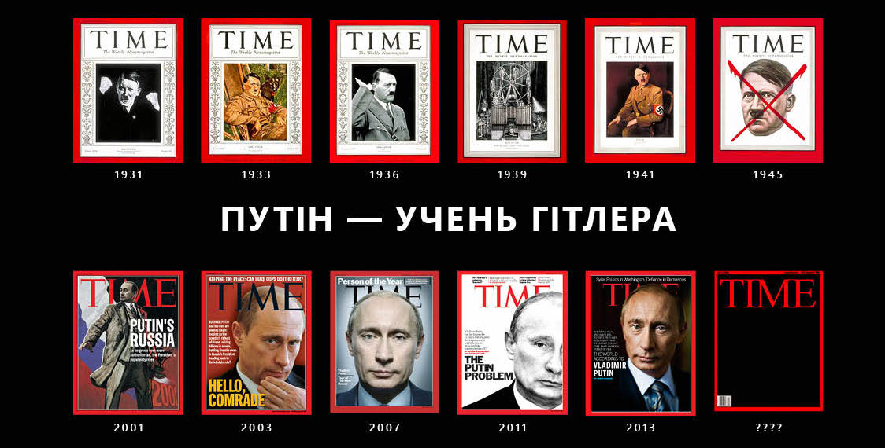

Над проектом
працював:
Павло Солодько
Путін — це Гітлер сьогодні. З 2014 року таку паралель проводили часто і багато хто.
У Росії навіть побачили в цьому комплімент: штатний пропутінський політолог написав, що до 1939 року — тобто до вторгнення в Польщу, з якого офіційно почалася Друга світова війна — Гітлер був не такий уже й поганий.
Який же він був насправді, той «хороший» Гітлер між 1933-м (рік приходу до влади) і 1939-м?
Над проектом працював: Павло Солодько
Опубліковано: 21 грудня 2018 року
ТЕКСТИ детально проаналізували дії фюрера на цьому історичному етапі. Ключова їхня ознака, користуючись термінологією воєнної доктрини Російської Федерації, — гібридність.
За мирні роки Гітлер провів ряд успішних квазівоєнних кампаній. І з кожної виходив переможцем. Не будучи теоретиком подібного роду конфліктів, він мав геніальну «чуйку» щодо застосування гібридних прийомів на практиці.
Якщо ж придивитися детальніше, вражає разюча схожість тактик тодішньої Рейхсканцелярії і нинішнього Кремля. Ви не повірите, як багато між ними спільного.
Але про все по порядку.
На початку 1939-го Адольфу Гітлеру — 49, скоро ювілей. Добігає кінця шостий рік його влади в Німеччині. За цей час він знищив у країні демократичний устрій, повністю зачистив опозицію і отримав практично диктаторські повноваження.
Виборці ж у захваті. Пересічний німець — хай він іще недавно був депутатом місцевої думи від комуністів чи
демократів — захоплюється діями свого президента канцлера. І ось чому.
Колискою німецької — як і російської — демократії стала геополітична поразка.
Берлін у 1919-му програв Першу світову, Москва у 1991-му — Холодну війну. Як німці, так і росіяни не хотіли жити по-старому — і спробували будувати республіку замість імперії. Але жити по-новому не зуміли. Політичні кризи, економічні потрясіння, розпад звичного укладу спричинили розчарування у дерьмократии і ностальгію за сильною рукою.
У міжвоєнній Німеччині демократія ще й асоціювалася з рядом принизливих поступок на користь переможців. Бо не імператор Вільгельм (утік до Голландії), а новонароджена Німецька республіка підписала у 1919 році Версальський мирний договір, який визначав післявоєнний світовий порядок.
Підготований без німців документ змушував Берлін до величезних (фінальні виплати відбулися у 2010-му) репарацій грошима й сировиною — переважно на користь Франції.
Договір покладав на Німеччину всю відповідальність за початок світової війни. На думку німців, які пам'ятали, що мілітаристський шал у 1914 році охопив значно більше країн Європи, це було нечесно.
Німцям заборонялося мати авіацію та артилерію, флот і Генштаб, тільки невеличкі сухопутні сили. Бронемашини залишалися хіба що в поліції.
Німеччина втрачала 12% довоєнної території на користь сусідів.
Чималий шмат території обабіч Рейну (серце німецької індустрії) визнавався демілітаризованою зоною, сюди не мала права потикатися навіть куца німецька армія.
У 1920-х роках союзники кілька разів вводили в Рейнську зону війська — щоб змусити Берлін вчасно платити репарації. Республіканська влада могла відповісти хіба що «пасивним протестом», спричиняючи обурення патріотів — як правих, так і комуністів. Саме під час чергового загострення на Рейні Гітлер улаштував пивний путч, проголосивши «повалення уряду зрадників у Берліні».
...Розпад СРСР не супроводжувався такими несправедливостями, особливо щодо РФ. Але кремлівська пропаганда робить усе, щоб сьогоднішні росіяни почувалися такими ж приниженими, як німці 100 років тому.
Американець Вільям Ширер працював у міжвоєнному Берліні кореспондентом. Він підкреслює, що в січні 1933-го — коли Гітлер став канцлером — його першочергова мета відповідала «прагненням величезної більшості німців»:
1) позбавитися принизливого диктату Версальського договору, не викликавши санкцій у відповідь;
2) відновити армію, не опинившись у стані війни.
Тільки виконавши ці два пункти, Гітлер міг би по-справжньому взятися за зовнішню політику, завдання якої він
так відверто описав у «Майн Кампф» — захопити побільше життєвого простору [території] і заставить
хохлов накормить Москву вирішити нарешті продовольчий, сировинний та інші дефіцити Німеччини.
Однак на той момент фюрер іще не мав жодного авторитету на світовій політичній арені: для закордону він був фанатиком-авантюристом, що його примхою долі винесло у крісло голови уряду.
На початку 2000-х світ найбільше боявся терористів. Недарма ж ранній Путін так любив говорити про «солідарність РФ у боротьбі зі світовим тероризмом».
А тоді, після кривавого кошмару Першої світової, провідні країни найбільше боялися війни. Тому перша заява Гітлера для світу була промовою про мир.
«Війна — безмежне безумство, — каже він у травні 1933-го, презентуючи депутатам Рейхстагу свою зовнішньополітичну програму. — Німеччина готова ліквідувати не тільки наступальну зброю, але й усю свою армію, лишень би зберігся мир».
У цій ідеалістичній, гідній самого Винниченка заяві ховалася й пастка: «Німеччина вимагає рівності з іншими країнами у сфері озброєння». Однак світ був зачарований: шалений нацистський диктатор виявився чемним і делікатним.
Особливо зачарувалися ЗМІ вірогідного противника. Офіційний орган лейбористів «Дейлі геральд» пропонував повірити Гітлеру на слово [і негайно роззброїтися]. А найвпливовіша британська газета того часу — «Таймз» — написала, що вимоги фюрера щодо рівності озброєнь «беззаперечні».
Так, непомітно для інших, Гітлер почав руйнувати Версальський договір. А руйнувати Версаль означало руйнувати весь післявоєнний устрій.
Класичний прийом гібридної війни — «тактика салямі». У вінтажному британському серіалі «Так, прем'єр-міністре!» вона детально описується в першій же серії.
Замість одного нормального кроку гібридний солдат робить кілька менших. Наче ковбасу тоненько нарізає. Рух до мети — поступовий і не завжди помітний, що знижує гостроту реакції противника.
Невинна вимога Гітлера «урівняти озброєння» є тільки початком, першим змахом ножа над палкою салямі.
...Минає літо 1933 року. На засіданнях Ліги Націй (тогочасного прообразу ООН) союзники згоджуються скоротити свої армії до німецького рівня. Але просять кілька років, щоб це реалізувати.
Пастка спрацювала, і фюрер робить перший надріз. Він оголошує:
Німеччині відмовляють у рівності озброєнь! Ліга Націй відкинула наші мирні ініціативи, тому Німеччина залишає цю неефективну організацію.
У гібридному конфлікті геополітика — не шахівниця, а картковий стіл. І тепер Гітлер грає за цим столом у відкриту. Він каже про вихід Німеччини з Ліги Націй, але інші гравці чудово розуміють справжнє значення демаршу: «Ми ігноруємо попередні угоди, включно з Версальським мирним договором, і починаємо переозброєння».
Вождь Німецького рейху перевіряє реакцію опонентів. Перед тим міноборони Британії публічно попередило, що відповіддю на спробу Німеччини переозброїтися будуть санкції. Однак минає місяць, другий... і жодної реакції. Маленький крок зроблено.
Трісь! — розламалася перша цеглина в підмурівку післявоєнного світового порядку.
...РФ після грузинської кампанії 2008 року теж почала переозброювати армію. У Москві планують завершити цей процес до 2020-го.
У 1934 році обслуговуванням військових замовлень займалося вже понад 240 тисяч німецьких підприємств. Оцінивши розмах, союзники зрозуміли — треба щось робити. І вирішили... змиритися. Навіщо тиснути на й без того ображену Німеччину, провокуючи новий конфлікт?
На початку 1935-го Британія і Франція натякнули Берліну, що не проти визнати паритет в озброєнні. А оскільки це йшло в розріз із умовами Версальського договору, запропонували Німеччині підписати нову мирну угоду, за участю більшості країн Європи. Гітлер не збирався нічого підписувати, тому тягнув час у дипломатичному листуванні.
Так він відрізав іще один шматочок салямі: союзники знають про масштаби військової модернізації, але жодних санкцій знову не застосували. Очевидно, змирилися з тим, що у Німеччини буде сучасна зброя. Є ще один маленький крок уперед!
І одразу робимо наступний: ним буде офіційна заява з Берліна, що Німеччина має власні військово-повітряні сили. Заборонені, нагадаємо, Версальським договором. Якщо Захід стерпить і це, то можна й увесь вермахт легалізувати.
Показовий механізм цієї заяви. Її озвучує не сам диктатор, а його проксі — посередник. У РФ такі пробні кулі запускаються, приміром, через керівника фракції Держдуми, члена ПАРЄ Владіміра Жиріновского. Весною 2014-го він пропонував Польщі, Угорщині та Румунії разом поділити Україну.
У Гітлера цього разу посередником був Герман Ґерінґ — рейхсміністр авіації. А медіа-майданчиком стала британська «Дейлі мейл», якій запропонували ексклюзивне «і сенсаційне, пане редакторе!» інтерв'ю з німецьким чиновником.
Газета вийшла, визнання Ґерінґа про відродження військової авіації прозвучало гучно. Де ж санкції союзників?
Єдиною відповіддю на таке кричуще порушення договору стала... пропозиція британського МЗС зустрітися у Берліні.
Гух! — будинок Версалю протримався 16 років, аж тут у нього просіла стіна.
І Гітлер уже не вагається, щоб відрізати останній шматок ковбаси. В одну з березневих субот 1935 року канцлер видає закон про загальну військову повинність і створення вермахту. Це повноцінні збройні сили: сухопутні війська, авіація, флот. До 500 тисяч військовослужбовців — уп'ятеро більше від дозволеного Версалем.
Цього разу союзники відреагували. Британія, Франція та Італія (остання теж перемогла у Першій світовій) висловили глибоке занепокоєння і «рішуче засудили» Гітлера за те, що він узявся ламати стіни спільного європейського дому.
Представники трьох країн-переможців зібралися в Італії, на альпійському курорті. Вони ясно передбачають кроки Гітлера після лігалайзу нової армії:
а) повернути військовий контроль Рейху над Рейнською зоною (ключовим центром німецької індустрії, в тому числі й військової);
б) захопити Австрію.
Саме на цих двох пунктах наголошується у британсько-французько-італійській заяві, якою завершилася конференція в Альпах:
а) союзники вірні чинним договорам про непорушність післявоєнних кордонів і демілітаризований статус Рейнської зони.
б) союзники готові підтримати незалежність Австрії.
Така одностайна єдність трьох країн занепокоїла Генштаб та МЗС Третього Рейху. Але не Гітлера. Фюрер логічно вважав: якщо досі союзники реагували на його дії винятково словами, то змиряться і з подальшим вставанням Німеччини з колін.
Бо слова, за якими немає дії — це просто прийом психологічного тиску. У термінах карткової гри — блеф. У тебе погана карта, але ти поводишся так, наче маєш у руці виграшну комбінацію. Якщо поведінка твоя переконлива, опоненти здаються самі. І навпаки.
Політичний блеф — ще одна із ключових гібридних тактик. Гітлер стане майстром у її застосуванні.
...Але зараз фюреру треба, навпаки, зменшити тиск на противника. Ставки щойно піднято, черговий окраєць салямі відрізано, тепер головне — не перегнути палицю, заспокоїти супротивника. Гібридна деескалація: «Це був останній шматок, тепер давайте поговоримо».
І вовк знову вдягає овечу шкуру, і знову йде в Оперний театр (там засідає парламент після пожежі в будівлі Рейхстагу), і знову говорить про те, що всі хочуть чути — про мир.
Фюрер так щиро клянеться у відданості ідеалам, які повністю протилежні його власним, що стає ніяково. Цей важливий гібридний прийом варто назвати поняттям з ідиш хуцпа — нахабна цинічна брехня, яка паралізує опонента.
Цю тактику придумав не Гітлер. Ще перші більшовики зробили її головним методом політичної боротьби, а Юлія Тимошенко періодично використовує й досі. Ленін визначав цей прийом терміном «наднахабство«: «Действительное впечатление можно произвести только сверхнаглостью».
Впевнено називати чорне білим і навпаки — ось що таке російська хуцпа в нинішній гібридній війні. Коли законно обрана влада стає «хунтою», а самозвана військова хунта — «народною владою».
Хуцпа — це вивернути з ніг на голову слова сімферопольського рабина, який скаржиться на принесений окупантами антисемітизм і збирається тікати з Криму. Збрехати, що це київський рабин — і ось уже готова новина «Евреи бегут из Киева из-за антисемитизма новой власти».
Хуцпа — це назвати могилу російських окупантів, убитих в бою під Макіївкою, массовыми захоронениями мирных жителей Донбасса. Закатованих карателями, ясна річ. «В основном женщин! — такий анонс (разом зі списком коментаторів) розсилатиме путінська адміністрація. — Их насиловали и убивали страшно!» І вимагатиме від ОБСЄ і ПАРЄ розслідувати цей «воєнний злочин».
Хуцпа — це Путін, який у березні 2014 року, готуючись розпалити гібридну війну від Харкова до Одеси звертається з парламентської трибуни до українців:
Любі друзі, не вірте тим, хто лякає вас Росією. Тим, хто кричить, що за Кримом настане черга інших регіонів. Росія не хоче поділу України, нам це не потрібно.
Хуцпа — це Гітлер, який у березні 1935 року, готуючись дощенту зруйнувати мирний устрій, звертається з парламентської трибуни до Заходу: «Націонал-соціалістична Німеччина не хоче війни, тому що прекрасно розуміє: в будь-якій війні гине цвіт нації... Ми й гадки не маємо завойовувати інші народи. Німеччині потрібен мир, вона прагне його!».
...Свою промову фюрер завершує ефектним театральним жестом — публічно клянеться у відсутності агресивних намірів щодо сусідів:
Урочисто визнаємо кордони Франції і відмовляємось від претензій!
Обіцяємо не втручатися у внутрішні справи Австрії чи приєднувати її!
Присягаю, що Німеччина не порушить демілітаризації Рейнської зони!
Поки вусата надлюдина присягає, новостворений німецький Генштаб вже третій тиждень працює над тим, як окупувати Рейнську зону. Це наказ №1 у щойно легалізованій армії. От тільки армія легалізована, а наказ ще ні. Військовий міністр Бломберг пише його від руки — щоб не використовувати офіційні бланки і штатних машиністок.
Учасникам штабних засідань взагалі забороняється робити якісь нотатки.
Якщо документ загубиться, його використає ворожа пропаганда. А усні заяви завжди можна спростувати.
Гібридна війна — річ непевна. Іноді в неї краще грати без офіційних документів.
Через рік Гітлер дочекався приводу для подальшого підвищення ставок. Парламент Франції ратифікував мирний пакт із Радянським Союзом. Фюрер назвав це зрадою домовленостей: дії Франції, мовляв, зруйнували дотеперішній мирний договір. І він уже нечинний — включно з пунктом про Рейнську демілітаризовану зону.
1 березня 1936 року Гітлер викликає міністра оборони фон Бломберґа з групою штабних генералів:
Готуйте армію до переходу через
РубіконРейн.
Значна частина військових висловили впевненість у провалі такого грандіозного блефу. У французів вистачало боєздатних дивізій, щоб вибити нечисленні німецькі сили з демілітаризованої зони. Власне, післявоєнні мирні угоди і передбачали, що Франція має вчинити саме так, а Англія зобов'язана їй допомогти.
Фон Бломберґ теж вагався, але план окупації Рейнської зони підготував. Цілком у гібридних традиціях міністр визначив майбутню військову операцію як мирну, у форматі «неочікуваного кидка».
На випадок французького опору німецьким військам план передбачав «бойові контрзаходи». Ішлося про стрімкий відступ вермахту назад за Рейн.
На світанку 7 березня в Рейнську демілітаризовану зону без зайвого шуму увійшли німецькі підрозділи. Бломберґ зміг зібрати для мирної операції не більше дивізії (10—12 батальйонів). На протилежний бік Рейну переправилося тільки три батальйони.
Жереб було кинуто.
Ця дата — 7 березня 1936 року — ключова у хронології протистояння нацизму із західними демократіями.
Сам Гітлер і через роки згадуватиме той день як про переломний момент гібридної фази Другої світової війни — «найдраматичніші в житті години». Блефував він тоді відчайдушно:
Якби французи увійшли тоді в Рейнську зону, ми змушені були б тікати, підібгавши хвоста. Бо наших військових ресурсів не вистачало навіть на слабкий опір.
О 10-й ранку міністр закордонних справ Німеччини Нерита вручив послам Британії, Франції та Італії офіційні ноти. Вони повідомляли, що Рейх не визнає дотеперішнього мирного договору. І пропонує укласти новий.
Французький посол влучно узагальнив:
Гітлер б'є суперника в обличчя зі словами «Я приніс пропозицію миру!»
Спершу підвищення ставок, потім — гібридна деескалація.
До згаданої пари тактичних прийомів може додаватися третій — імітація діалогу. Результативні переговори гібридному агресору ні до чого. Йому треба, щоб противники вірили в саму можливість домовитися.
І це працює. Союзники вкотре йдуть на перемовини, знову закриваючи очі на силові кроки диктатора. Лондонська «Таймз», печалячись щодо вторгнення за Рейн, все ж сподівається на подальший мир. Її передовиця з цього приводу має заголовок Можливість перебудови :) Суцільне — і безкінечне — «перезавантаження стосунків».
Пізніше Гітлер повторить фокус із «оновленням мирних договорів» у Австрії та Чехословаччині. Під загрозою сили він змусить тамтешні уряди прийняти німецькі умови миру, навзаєм пообіцявши більше не порушувати сусідський суверенітет. Сталін зробить аналогічні пропозиції Литві, Латвії, Естонії та Фінляндії.
Не згодиться тільки Фінляндія. Взамін вона отримає війну, зате збереже суверенітет. Всі інші країни спершу втратять незалежність, а потім ще й отримають війну.
...Навесні 2014-го РФ пробувала
нав'язати подібну пропозицію миру Києву. Агресор, який щойно вдарив сусіда в обличчя
грубо порушив попередні домовленості, пропонував ЄС і США разом гарантувати нові українські
кордони.
В обмін на нову мирну угоду Україна мала стати федерацією, відпустити Крим, проголосити вічний нейтралітет, визнати російську мову державною і не втручатися в церковні справи.
Можна уявити, де б ми були зараз, якби погодились.
Опівдні цього ж дня фюрер офіційно оголошує про мілітаризацію Рейнської зони. Його заява, як і попередні, має вигляд звіту перед парламентом.
Це вже не той багатопартійний рейхстаг, члени якого у 1933-му слухали промову фюрера про пацифізм.
Тепер у залі Оперного театру сидить 600 депутатів, всі з нацистської партії. Вони потрібні, бо формально диктатура Гітлера — парламентська демократія. Легітимність його правління спирається на конституцію знищеної ним республіки.
Це ще одна з гібридних тактик — формальне дотримання чинних правил гри. Свого роду глумлива повага до інших гравців за світовим покерним столом, яка дозволяє їм удавати, що нічого страшного не відбувається. Ніби й не війна.
Гітлер, який чудово знав босяцьку школу Відня і зневажав буржуазію, казав:
Якщо збираєшся відстоювати безкомпромісну позицію, надавай собі підкреслено буржуазного вигляду.
Весь світ усвідомлює, що однопартійна диктатура нацистів — аж ніяк не та демократична республіка, з якої починалась післявоєнна Німеччина. Але формальностей і ритуалу дотримано — є парламент, хай навіть маріонетковий. І тиран — не тиран, а всього лиш невисокий чоловік на скромній посаді рейхспрезидента федерації.
...До оголошення про створення Вермахту підлеглі міністра пропаганди Геббельса стежили, щоб у пресі не з'являлося словосполучення «Генеральний штаб». Створення цього органу заборонялося згідно з умовами Версальського договору, і Гітлер наказав Геббельсу не підставлятися. Весь світ знав, що у німців є тіньовий Генштаб, але формально його не було — отже, договір нібито не порушений.
У 2014-му світові теж стане ясно, що Україну окуповують російські військові на російській техніці зі штатною зброєю. Але формально в цієї армії немає шевронів ЗС РФ. Ніби й не війна, і Будапештські угоди не порушуються. І Путін присягає, що дотримується чинних правил гри.
Хіба можна ігнорувати угоди й окупувати територію іншої держави? Ми не такі, ми — за мир! —
глумиться російський фюрер із демократичних лохів за покерним столом. А потім урочисто звітує перед своїми маріонетками в Раді Федерації про загарбання Криму
Депутати, які слухають Гітлера та Путіна — ширма для Заходу і тло для вождя. Вкупі вони виконують іще одну гібридну функцію — згаданих вище проксі-посередників.
Бо диктатори Гітлер і Путін звітують перед парламентом тільки формально. Насправді ж їхні виступи є набором сигналів для аудиторій поза парламентськими стінами — від власних виборців до політичних еліт іноземних країн. Така ось гібридна дипломатія.
...Після підвищення ставок, коли вермахт уже за Рейном, треба зменшити напругу, заспокоїти опонентів показовою розрядкою — і Гітлер знов обіцяє Заходу мир.
За три роки фюрер уже двічі давав таку обіцянку з цієї ж трибуни (другий раз іще й урочисто присягав). Слова дещо вицвіли. Треба реанімувати їх емоціями, пафосним театральним накалом.
Тому, обіцяючи втретє, Гітлер змушує неправдиво присягати ще й депутатів парламенту.
Ця знакова сцена масової кривоприсяги — еталонний приклад наднахабства. Ось як її описує очевидець:
...600 депутатів — маленьких людей із бичачими шиями, коротко стрижених, з великими животами, у коричневій формі і важких чоботах, схопилися на ноги. Немов автомати, вони викинули правиці в нацистському вітанні, горлаючи: «Хайль!»
Гітлер піднімає руку і неголосно каже: «О мужі німецького рейхстагу!»
Абсолютна тиша.
«Цієї історичної миті, коли в західних районах Рейху німецькі війська йдуть назустріч своєму мирному майбутньому, нас всіх повинні з'єднати дві священні клятви»...
Німецькі війська і мирне майбутнє — чи не взаємозаперечні параграфи? Пригадується ще один приклад хуцпи — друкований орган окупаційної адміністрації в ОРДЛО. Люди, які принесли в регіон війну, назвали свою газету... Мирный Донбасс. Дуже по-гібридному.
...Далі говорити Гітлер не може. Для парламентського натовпу повідомлення про вступ вермахту в Рейнську зону — новина. Мілітаризм в їхній крові тепер б'є їм у голови. З істеричними криками вони підхоплюються, за інерцією викидаючи правиці, їхні обличчя спотворені, роти широко відкриті...
Проксі-маріонетки лишень тепер дізналися про вчинене вождем. Тим часом агресор Гітлер — як пізніше його учень Путін — продовжує зображати миротворця.
...Опустивши, ніби в смиренні, голову, він терпляче чекає тиші. Потім ще тихим, але емоційно насиченим голосом, вигукує дві обітниці:
«По-перше, ми клянемося не вдаватися до сили... По-друге, ми клянемося, що тепер, як ніколи раніше, будемо прагнути до взаєморозуміння... Ми не маємо територіальних домагань у Європі! Німеччина ніколи не порушить миру!»
Шість сотень народних депутатів, обраних за безальтернативним однопартійним списком, урочисто повторюють слова брехливої присяги.
«Если надо для святого дела, будем врать всей страной», — підтвердить у серпні 2014 року один російський публіцист (ідеолог безумних гібридних концептів Русская весна та Атомное православие).
Поки фюрер присягає, генерал фон Бломберґ тиснеться крізь натовп журналістів до виходу. Щоки міністра оборони смикаються — він нервується. Він хоче (і в цьому його підтримують інші генерали, тільки Гітлер проти) відкликати війська з-за Рейну. Бо раптом французи усе ж таки втрутяться?!
Але французи з їхніми десятками дивізій не втрутилися. І британці вирішили не втручатися. Маркіз Лотіан із палати лордів тоді казав:
Зрештою, Німеччина просто вийшла на свій задній двір.
Побачивши все це, Бельгія (теж переможець Першої світової) оголосила про свій нейтралітет.
Хрясь! — тріснула іще одна стіна спільного європейського дому.
Бо якби союзники відреагували хоча б якимись діями, а не черговими словами занепокоєнь, то німцям довелося б відступати, «підібгавши хвоста». І диктатор тоді б утратив обличчя. Його вигаданому пропагандою генію добряче б утерли носа, як от Путіну в Сирії.
Через шість років — у 1942-му, на вершині успіху, коли Третій Рейх окупує найбільше життєвого простору за свою недовгу історію — Гітлер у ставці під Вінницею з ностальгією згадуватиме про мілітаризацію Рейнської зони:
А якби не я, а хтось інший стояв тоді на чолі держави? У будь-кого здали б нерви. Я був змушений брехати, а врятували нас усіх моя впертість і моя самовпевненість.
Це вона, суть гібридної війни — брехня і блеф, самовпевнене підвищення ставок. «Ми готові ризикнути трьома батальйонами, а ви? «Вы готовы умереть за Нарву?».
Путін, який відправив свою гібридну тактичну групу в той невдалий наступ на курдсько-американські позиції у Сирії, поводився так само. Якби вийшло, він був би геніальним стратегом, а США — демократичними слабаками-задротами.
...Перехід трьох батальйонів за Євфрат Рейн — геть незначна військова операція. Але вона докорінно
змінила загальну стратегічну ситуацію у Європі. Бо якщо Гітлер не втратив обличчя, то його втратила Франція.
Всім європейським країнам (особливо гостро це відчули східні й південні сусіди Рейху) стало зрозуміло: Захід не воюватиме проти Німеччини у випадку агресії, союзники не будуть дотримуватися так старанно створюваної ними ж системи безпеки.
Франція з сотнею дивізій не виступила проти трьох батальйонів. Хіба вона стане проливати кров своїх солдатів, якщо вермахт розпочне наступ на Схід?
«У березні 1936 року західні держави мали останній шанс без великої війни зупинити мілітаризм тоталітарної Німеччини і привести нацистський режим до повного краху, — напише Вільям Ширер. — Вони цим шансом не скористалися».
Хрясь! — у спільного європейського дому просів дах.
Але будинок іще стояв. І якщо не помічати тріщини в стінах та діряву стелю, можна було жити. У цьому ж 1936 році Гітлер провів у Німеччині Олімпійські ігри. У Берліні з цієї нагоди навіть антисемітські плакати і написи прибрали. Імітація діалогу: мовляв, ми не такі вже й погані хлопці, хоч і дещо войовничі.
...На церемонії відкриття Олімпіади французькі спортсмени, проходячи повз ложу Гітлера, дружньо зіґанули, що викликало ажіотаж на трибунах і грандіозний скандал зі зрадою/перемогою у Франції. Спорт же поза політикою.
Тоді ж Муссоліні переможно завершує війну проти Ефіопії. Він почав її ще в 1935 році — коли Гітлер показав італійському дуче, в які ігри можна грати з Заходом (легалізація вермахту). Ліга Націй запровадила проти Італії санкції, але нерішуче — вже через кілька тижнів скасувала. Ефіопський імператор Хайле Селассіє вирушив британським пароплавом у тривале вигнання.
Тоді ж в Іспанії розпочався військовий заколот генерала Франко проти республіканського уряду. На відміну від Муссоліні, Гітлер не відправляв туди великих військових контингентів — його не цікавила перемога, навпаки. Фюрер відверто зізнавався, що найважливішим є якнайдовше підтримувати нестабільність у регіоні. Довкола Росії таких регіонів уже ціле намисто.
Після війни, в ході Нюрнберзького процесу, Ґерінґ зробить іще одне відверте зізнання щодо Іспанії. Регіон, у якому Німеччина підтримувала нестабільність, став чудовим полігоном для випробування нової зброї Рейху — модернізація вермахту тривала повним ходом.
Загалом весь наступний 1937-й рік Гітлер переозброювався.
У січні 1937-го він нарешті завершив «версальську» багатоходівку, відрізавши й тут останній шматочок ковбаси. Звітуючи перед рейхстагом, фюрер офіційно заявив: «Німеччина прибирає свій підпис з Версальського договору». Хоча сам договір уже майже рік був похований. Так само Путін через рік після Криму відверто визнав те, що досі так гаряче заперечував.
[До речі, сам термін «тактика салямі» з'явився вже після Другої світової. І придумали його не британські телесценаристи, а лідер комуністів Угорщини Матяш Ракоші — «Сталін із Будапешта». За допомогою цього гібридного прийому Ракоші поступово знищив усю політичну опозицію в країні. Зрештою угорці не витримали: правління Ракоші завершилося кривавим антирадянським повстанням 1956 року.]
...Від першої появи Адольфа Гітлера за парламентською трибуною минуло чотири роки. За цей час німці (навіть колишні політичні опоненти) повірили у свого вождя.
Він зробив те, що не вдалося жодному уряду часів республіки — скинув диктат Версалю, повернув армію, безкровно повернув німецьку честь. Вперше після Першої світової німецькі війська наступали, ще й успішно.
Популярність фюрера зросла до висот, яких раніше навряд чи досягав хоча б один правитель Німеччини. І це забезпечило йому владу над останнім бар'єром на шляху до війни — над армією.
У кризовій ситуації з Рейнською зоною генерали виявили нерішучість. Вони боялися, що французи чинитимуть опір, але Гітлер виявився розумнішим. Він геній, просто довіримося його чуттю, а він уже вивезе Німеччину.
...Одеський політтехнолог Гліб Павловський десять років працював на Кремль, щоб зрештою зрозуміти жахаючу річ:
Головне — це Путін. Все тримається на ньому.
Німецького канцлера шанують і за кордоном. Це вже не вискочка-авантюрист, а солідний гравець за геополітичним столом. З Олімпіадою за плечима. Уряди Франції та Британії регулярно ведуть із ним політичні дебати щодо «невтручання» в іспанські справи, хоча всі все прекрасно знають.
Гітлер на чолі процвітаючої войовничої Німеччини виглядає суперменом у порівнянні з загниваючими західними демократіями, які не наважуються відповісти на сміливу політику вождя. Світова війна? Не смішіть наші панцеркампфваґени.
Пізніше фюрер назве нерішучих урядовців Франції та Англії «нікчемними черв'яками» за їхню готовність іти назустріч фальшивим мирним пропозиціям. Бо насправді всі ці роки Гітлер займається тільки одним — підготовкою до великої війни. І неважливо, якою вона буде: справжньою чи гібридною.
Про свої плани фюрер довго не говорить нікому. Його соратникам, виснаженим грою нервів у 1935—1936 роках, і не спадає на думку, що Гітлер піде далі у підвищенні ставок. Піде далеко за німецький кордон, щоб завоювати сусідні країни.
Дата, коли Гітлер уперше розповів іншим про свої загарбницькі плани, теж вважається істориками одним із рубіконів Другої світової. Це 5 листопада 1937 року.
По обіді того дня Гітлер скликав таємну нараду, на яку запросив лише п'ятьох:
- міністра оборони і головнокомандувача фон Бломберґа;
- командувача сухопутними військами генерала фон Фрича;
- командувача військовим флотом адмірала Редера;
- командувача військовою авіацією генерала Ґерінґа;
- рейхсміністра іноземних справ барона фон Нейрата.
Останній гість упав у вічі гітлерівським ад'ютантам. Вони зауважили, що Гітлер ще ніколи не проводив наради верхівки вермахту спільно з керівником МЗС. Це ж зовсім різні сфери, — думали ад'ютанти. — Поки працюють дипломати, військовим робити нічого, і навпаки.
Вони не знали, що в гібридній війні дипломати воюють пліч-о-пліч з армією. Нема МЗС, є Дипломатические войска — сучасних прикладів більш ніж достатньо.
Нарада тривала кілька годин. Говорив Гітлер, інші приголомшено слухали.
Розпочав фюрер:
Те, що ви зараз почуєте, є результатом довгих роздумів за чотири з половиною роки перебування при владі.
Щоб підкреслити важливість представленого задуму, Гітлер назвав його «останньою волею» на випадок власної смерті:
Ось найголовніше з цього політичного заповіту:
1) Мета германської політики — збільшити життєвий простір німецького народу. Тож майбутнє Німеччини вирішуватиметься в серці Європи, в «безпосередній близькості до Рейху».
2) «Наше перше завдання — повалити Чехословаччину та Австрію одночасно».
3) Анексія цих двох країн не тільки покращить стратегічну ситуацію для Рейху, а й принесе ресурсні бонуси — від харчів до озброєння. І 10 з гаком мільйонів додаткових німців! Більше сотні повноцінних батальйонів можна сформувати.
Нарада 5 листопада 1937 року завершилася о 20:30, в Берліні давно стемніло. Кілька людей, які того вечора вийшли з Рейхканцелярії, були шоковані — Гітлер щойно оголосив їм про своє остаточне рішення встати на шлях війни у Європі.
Окупацію Чехословаччини й Австрії важко буде пояснити відновленням справедливості після нав'язаного переможцями кабального договору, як у випадку Рейнської зони. Території обох країн ніколи не входили до Другого рейху [Німецької імперії 1870—1918].
Троє з п'яти учасників таємної наради сумнівалися в успіху озвучених планів. Міністр оборони Бломберґ, командувач сухопутними військами Фрич і міністр закордонних справ Нейрат переконували Гітлера, що передчасно розпочата війна призведе Німеччину до катастрофи.
Не минуло й кількох місяців, як призначені ще «за республіки» Бломберґ, Нейрат і Фрич позбулися своїх посад. За ці роки вони були чи не єдиною публічною опозицією Гітлеру.
Фюрер хотів, щоб його підлеглі були молодші. Пізніше він завжди звертатиме увагу на вік, призначаючи командирів Вермахту — молодь імпонувала йому авантюрністю, вірою і... відсутністю життєвого досвіду.
В окупаційні армійські корпуси РФ на Донбасі теж шукають кадри помолодше. Щоб не пам'ятали радянський досвід співжиття (а хтось і в Афгані разом воював) з українцями.
...Новим керівником МЗС став групенфюрер СС, такий собі Йоахім фон Ріббентроп.
Командувачем сухопутними військами став генерал Вальтер фон Браухіч (у грудні 1941-го, після перших невдач під Москвою, генерал поступиться посадою єфрейтору, геніальному стратегу Гітлеру).
Міністерство оборони фюрер просто скасував. Натомість було створено Верховне командування Вермахту, якому й підпорядкувалися всі види збройних сил — сухопутні війська, авіація та флот. А Верховним головнокомандувачем Гітлер призначив сам себе.
5 лютого 1938 року офіційний орган нацистської партії «Народний оглядач» виходить із гігантським анонсом на першій шпальті [тут і далі оригінальні заголовки газет Третього Рейху наведено в російському перекладі — так воно органічніше]:
КОНЦЕНТРАЦИЯ ПОЛНОТЬІ ВЛАСТИ В РУКАХ ФЮРЕРА!
Все, націонал-соціалістична революція в Німеччині завершилася.
Настав час перенести її в широкий світ.
Гітлер, дарма що народився підданим найяснішого цісаря, Австрію не любив. Занадто вже ненька була мультикультурна і недостатньо німецька.
У 1913-му майбутній фюрер емігрує до Німеччини, уникнувши таким чином призову до
цісарського війська. Служити пліч-о-пліч із Ярославом Гашеком та Георгом Траклем слов'янами та
євреями він вважав «огидним».
Наступного літа в Баварії Гітлера застає звістка про початок світової війни. Першого ж дня він із ентузіазмом записується добровольцем до німецької армії — і проведе у фронтових окопах чотири роки поспіль, дослужившись до єфрейтора.
Величезна — від Чернівців до Праги, від Львова до Загреба — Австро-Угорська імперія не витримала напруги Першої світової війни і розпалася. Одним із її уламків і була Австрійська республіка — невелика держава між Альпами та Дунаєм, колишнє німецькомовне осердя імперії. Власне, «Остеррайх» означає «Південна держава». Тобто інший рейх — не той, що на півночі.
Про намір першим ділом приєднати Австрію до Німеччини Гітлер заявив іще у 1920-х, в написаній за ґратами (наслідок провального «пивного путчу» в Мюнхені) програмній книзі «Моя боротьба».
При владі в Австрійській республіці перебували... фашисти. Місцевий різновид авторитарного режиму за італійським зразком — праві цінності і тотальний колективізм. Плюс міцна католицька домішка. Відню, на відміну від нацистського Берліна, не йшлося про національність людей, ішлося про їхні стосунки з державою.
Південним сусідом Австрії була Італія — переможець у Першій світовій і батьківщина фашизму. Муссоліні виступав головним гарантом австрійської незалежності.
...Один із пунктів повоєнних мирних угод передбачав неможливість об'єднання Австрії та Німеччини в одну державу.
Гітлер почав руйнувати цю стіну спільного європейського дому ще в 1933 році — одразу ж після приходу до влади. Спершу він використав тактику проксі-посередників. А коли не вийшло, увімкнув інший гібридний режим.
Цей режим добре знайомий і нам. Назвімо його «нас там нет».
Німеччина потай організовувала й фінансувала націонал-соціалістичний рух в Австрії. Проводила у прикордонних таборах масові вишколи бойовиків і пропагандистів. Нелегально перекидала через кордон готівку й агітматеріали, вибухівку та зброю. Надавала притулок і трибуну лідерам австрійських наці, які втекли з батьківщини.
Гітлерівські проксі влаштували своєму уряду справжній терор — підривали авто, лінчували службовців, руйнували інфраструктуру. Втеклий австрофюрер Тео Габіхт не вилазив з ефірів німецького радіо, закликаючи земляків до повстання.
Апофеозом гібридної кампанії був невдалий путч, улаштований бойовиками віденського 89-го штандарту СС 25 липня 1934-го — через півтора року після приходу Гітлера до влади.
В анексіях Австрії та Криму так багато спільного, що й до путчу 1934 року можна підібрати сучасну українську паралель. Наприклад, сепаратистська спроба Юрія Мєшкова (1995), яка завершилася втечею гібридного «президента» до Москви.
Однак у Відні було кривавіше.
За три дні до путчу Геббельс записав у щоденнику:
Повернувся від фюрера... Австрійське питання. Чи спрацює? Я налаштований скептично.
...У коридорі урядової канцелярії штурмова група СС зіштовхнулася з канцлером Австрії Енгельбертом Дольфусом. «Руки вгору!» — вигукнув командир заколотників Отто Планетта. І вистрілив. Наступні кілька годин голова австрійського уряду стікав кров'ю на дивані у приймальній. Лікаря йому так і не викликали.
Інший підрозділ 89-го штандарту взяв під контроль урядову радіостанцію. І почав передавати в ефір фейки про відставку канцлера та його кабінету.
У канцелярії ж спалахнула політична дискусія. Змовники заявили Дольфусу, що тільки від нього залежало досягнення миру з Німеччиною. «Хлопці, ви на цьому не розумієтеся», — обірвав розмову вмираючий канцлер.
Енгельберт Дольфус мав 148 см зросту і був, напевно, найнижчим з європейських диктаторів. Однак гідність і здоровий ґлузд зберіг аж до смерті, засвідчивши вголос, що путчисти — тільки гібридний інструмент.
Бо насправді мир між Австрією і Німеччиною залежав винятково від однієї людини — Гітлера. Так само, як сьогодні взяти й припинити війну на Донбасі може тільки Путін — той, хто цю війну й почав.
...У день путчу Гітлер поїхав на ваґнерівський фестиваль. Правнучка композитора, з якою фюрер ділив оперну ложу, стежила за його обличчям щоразу, як офіцери зв'язку пошепки повідомляли чергові новини з Відня. Вождь був збуджений, але задоволений.
В якийсь момент Гітлер схаменувся. «Треба показатися, а то ще подумають, що я маю стосунок до цього», — сказав він фройляйн Вагнер і вийшов у ресторан.
По обіді Геббельс пише у щоденнику:
Дольфус мертвий. Повстанці відступили, уряд тріумфує. Все, це програш!
Гітлер і компанія справді мали стосунок до австрійського путчу. Державна інформагенція Німеччини DNB навіть підготувала офіційне повідомлення, де віталося падіння режиму Дольфуса і проголошувалась Великая Германия.
Але заколот провалився. Поліція та армія, давши есесівцям піти з урядових будівель, того ж дня розпочали арешти. Замість покійного Дольфуса австрійський фашизм висунув не менш харизматичного лідера — Курта Шушніґа. Новий канцлер узявся за нацистів рішуче і жорстко.
Путч і брутальне вбивство спричинили хвилю міжнародного обурення. Вперше фюрер представ перед світовою спільнотою в образі кривавого хижака, виступити проти якого вважали своїм обов'язком більшість державних мужів. Найбільше лютував Беніто Муссоліні.
Італійський вождь негайно подзвонив першому заступнику Дольфуса, пообіцявши захистити суверенітет Австрії від німецької агресії. Пізніше, в ході особистої зустрічі із віце-канцлером, Муссоліні не шкодуватиме емоцій:
Якщо ця країна убивць і педерастів підкорить Європу, нашій цивілізації настане кінець.
Надвечір того драматичного дня п'ять італійських дивізій вирушили до Бреннера — головного альпійського перевалу на кордоні з Австрією.
Гітлер дуже перелякався свого фальстарту.
Ми перед другим Сараєвом! —
кричав він, порівнюючи убивство Дольфуса із замахом на спадкоємця австро-угорського трону Франца Фердинанда, з якого розпочалася Перша світова війна.
До Другої світової фюрер іще не був готовий. Тому він умив руки. Нас там нет, — сказав він.
...Державна інформагенція Німеччини терміново підготувала зовсім іншу заяву для преси. Путч зображався винятково австрійською справою. Берлін засуджував «жорстоке убивство» та висловлював щире співчуття.
Гітлер відрікся від власної гібридної армії.
Австрійські силовики розпочали розправу з показової страти убивць Дольфуса — Отто Планетти і шістьох бойовиків його групи. Частині путчистів Відень гарантував (цю обіцянку пролобіювало посольство Німеччини) безперешкодний виїзд за кордон. Але зрештою арештували і їх.
Тринадцятьох із арештованих пізніше повісили. І ніхто з Берліна не заступився.
Виявилося, що Германия своих бросает. Як от зараз РФ, уникаючи посилення санкцій, відмовляється від затриманих в Україні російських гібридних солдатів.
...Так улітку 1934 року австрійський фашизм утер носа німецькому нацизму. І так Гітлер зрозумів, що не треба поспішати — краще різати салямі поступово.
Для цього він відправив до Австрії нового посла — Франца фон Папена. Це йому фюрер кричав про «друге Сараєво».
Папен — політичний важковаговик. Зовсім нещодавно він був головою німецького уряду, поступившись канцлерським кріслом тільки Гітлеру.
Нове призначення екс-прем'єра вирішує ряд гібридних завдань, перше з яких — негайний заспокійливий сигнал союзникам: «Ми так хочемо миру і дружби, що відправляємо до Відня найбільш статусного політика «догітлерівської» Німеччини». Гібридна деескалація — щоб уникнути «другого Сараєва» та передчасної війни.
Офіційно Папен поспішає до Австрії із миротворчою місією. За цим формулюванням ховається знайома нам імітація діалогу. Бо справжнє завдання нового посла — підтримувати в офіційного Відня переконання, що Гітлер не має наміру анексувати Австрію. І водночас розчищати австрійським нацистам шлях у велику політику.
Блискучий аристократ і щирий католик, Папен «якнайкраще годився для того, щоб дурити австрійців». Мирні пропозиції, озвучувані Папеном у наступні роки — класичний гібридний торг.
Фюрер не хоче аншлюсу, він просить тільки легалізувати в Австрії нацистську партію.
Або «Берлін накаже австрійським нацистам утриматись від тероризму, якщо Австрія підтримає німецьку міжнародну політику». Це як Путін обіцяє припинити війну на Донбасі в обмін на визнання Криму російським.
Водночас німецьке посольство фінансує не тільки нацистів, але й інші пронімецькі рухи в Австрії — скажімо, праве крило місцевих профспілок.
Через два роки після невдалого путчу посол Папен озвучує канцлеру Шушніґу чергову пропозицію від Гітлера:
«Для збереження єдності Австрії включити до складу уряду і провідних представників народної опозиції». Ось він, несподіваний удар в обличчя: «Я пропоную мирну угоду! Інакше не буде єдиної Австрії».
Кремль теж хоче упхати народну владу гібридних республік в український політикум. Така «чеченська інтеграція» — все та ж тактика формального дотримання правил. На словах гібриди називають себе лояльними, але реального контролю над ними влада не має.
Уявіть: офіційний Київ піддався на шантаж Кремля і визнав ОРДЛО не окупованою територією, а законними регіонами федералізованої України. Формально це припиняє, на радість міжнародній спільноті, неоголошений російсько-український конфлікт на Донбасі. Реально ж гібридна війна зміниться... гібридним миром.
У химерному світі постправди ці два поняття означають одне й те ж саме. Війна — це мир. Мир — це війна.
На словах народные республики можуть визнавати верховенство Києва, але насправді залишаться троянським конем Путіна, ширмою для його гібридної армії.
Уявили? Подальші події легко спрогнозувати на прикладі Австрії. Бо 80 років тому офіційний Відень піддався на шантаж Гітлера.
На той момент Австрійська республіка залишилася без головного союзника: Муссоліні вже з головою занурився в
африканську авантюру. «Проміняв на Сирію Ефіопію», — сурмила зрадонька над дунайськими набережними. І
Відень, витерши кров з розбитого носа, прийняв із рук фюрера пропозицію миру.
У липні 1936 року Австрія та Німеччина підписали велику мирну угоду. У ній
Гітлер зуб давав гарантував незалежність південних сусідів і невтручання в їхні внутрішні справи. У
відповідь Австрія проголошувала себе «німецькою державою» — тобто частиною Германского Мира.
Секретний пункт угоди зобов'язував канцлера Шушніґа амністувати ув'язнених нацистів (навіть засуджених за убивство Дольфуса) і надати їм певні посади у владі. Гітлерівські проксі натомість зобов'язувалися припинити гібридну війну проти власного уряду.
Коротше, австрійське АТО скасовувалося, колишні вороги держави сиділи у Раді визнавалися законною
частиною державної влади.
...Після невдалого путчу 1934 року Гітлер змінив керівника австрійських нацистів — замість дискредитованого Тео Габіхта ним став юрист із Відня Артур Зейсс-Інкварт. Улітку 1936-го, одразу ж після підписання австро-німецької угоди цей політемігрант повернувся з Рейху на батьківщину. За Інквартом потягнулася решта гібридних солдатів.
Гібридний дипломат фон Папен задоволено доповів фюреру, що укладений мирний договір — «вирішальний крок до ліквідації австрійської незалежності. Аншлюс тепер є тільки питанням часу».
Перший шматок австрійського салямі було відрізано.
Навесні 1937 року прем'єр-міністром Британії став Невілл Чемберлен. Досвідчений політик-консерватор вважав, що сама доля поклала на нього місію «домовитися з диктаторами». Що війни можливо уникнути, якщо умиротворити її паліїв. Просто треба по-нормальному поговорити з поганими хлопцями, знайти компромісний варіант — і вдарити по руках.
Подібну помилку робили й Буш-молодший з Обамою, і лідери ЄС та Британії. Донедавна її повторював президент Трамп, плекаючи ілюзію про можливість результативного діалогу з «другом Владіміром».
...У вересні 1937-го Муссоліні приїхав у Берлін із державним візитом. Ця поїздка назавжди змінила стосунки двох диктаторів — вони помінялися ролями. Старшим партнером у парі віднині став Гітлер. Новий, шикарно пошитий мундир фашистського ополчення не допоміг Муссоліні — фюрер розчавив італійця грандіозною показухою.
Мільйонні колони, чеканні лави, десятки тисяч прапорів, дружнє «Хайль!», смолоскипи, сурми і барабани, масштабні військові маневри і не менш грандіозна військова індустрія. Замість убогої «країни вбивць і педерастів» вражений дуче побачив силу, яка значно переважала найсміливіші мрії італійського фашизму.
Нині Путін намагається повторити цей ефект, організовуючи масштабні спортивні змагання, паради, військові навчання та інші невиданные даже в СССР заходи.
У листопаді 1937-го в Берліні відкрилася виставка, присвячена полюванню. Її відвідав пристрасний мисливець лорд Галіфакс — колишній віце-король Індії і майбутній міністр іноземних справ Британії в уряді Чемберлена.
Високий гість мав неформальну бесіду з Гітлером, в ході якої натякнув на готовність британського уряду до розумних компромісів:
Ми не наполягаємо на непорушному дотриманні чинного статус-кво, але хотіли б уникнути такого вирішення проблем, яке могло би спричинити ускладнення.
Лорд Галіфакс теж став жертвою імітації діалогу. Повернувшись до Лондона, він запевняв колег, що Гітлер — «щирий чолов'яга». Нацистський лідер «не збирається вдаватися до силових авантюр», бо зайнятий «внутрішнім розвитком Німеччини».
А ось як підсумував розмову з емісаром Чемберлена сам Гітлер:
Я ж казав, що англійці ляжуть зі мною під одну ковдру.
Тепер він знав, що Лондон і далі готовий терпляче йти на поступки, а не ва-банк.
Те, що британці вважали джентльменською домовленістю, фюрер вважав слабкістю. Аналогічно сприйняв обамівське перезавантаження і Путін після агресії в Грузії (2008).
Так минув 1937-й — рік активного переозброєння вермахту. За цей час керовані з Берліна австрійські нацисти розгорнули кампанію тиску на віденський уряд: від вуличних бійок до бомбових терактів.
А в січні 1938-го австрійська поліція розкрила черговий план нацистського перевороту.
Штабом із підготовки путчу виявилася організація, яка офіційно займалася примиренням австрійських наці та уряду. За миротворчою вивіскою ховався терористичний центр гітлерівського підпілля у Відні.
Гібридно? Цілком. І досі актуально: партія, що мала захопити владу після проросійського перевороту в Чорногорії (лютий 2016), теж маскувала тоталітарну суть ліберальною назвою «Демократичний фронт».
...Шокований посол Папен дізнався, що сценарій нацистського перевороту передбачав убивство... посла Папена — це стало би приводом, щоб Германия ввела войска.
Путін теж віддає належне цьому гібридному прийому — убивати своїх, щоб потім рішуче ставати на їхній захист. Його похід у народні кумири розпочався з підірваних багатоповерхівок у Москві, щоб закінчитися розстріляними багатоповерхівками на Донбасі.
Ледь не зачепило ту ж Чорногорію. Бо російські ГРУшники, які й були організаторами перевороту, працювали за звичними схемами. Їхній план передбачав, що гібридні солдати, перевдягнені поліцейськими, застрелять десяток-другий «своїх» — учасників антинатовського мітингу в центрі столиці — щоб спровокувати штурм урядових будівель (і вбити під шумок пронатівського прем'єра).
...Отже, 4 лютого 1938 року Гітлер відправляє у відставку трьох нерішучих «опозиціонерів» — міністра оборони, міністра зовнішніх справ і командувача сухопутних військ. А себе призначає верховним головнокомандувачем, концентруючи в одних руках безпрецедентні повноваження.
Так завершується націонал-соціалістична революція в Німеччині, пригадуєте? Настав час перенести її у широкий світ.
І Гітлер запрошує в гості Курта фон Шушніґа. Австрійський канцлер згоджується. Він планує показати Гітлеру
шматок кузова розстріляної маршрутки зібрані віденською поліцією докази того, що нацисти перші
порушили ще свіжу мирну угоду. Свіжі, реальні докази підготовки путчу — це ж так логічно, він переконає
фюрера!
12 лютого 1938-го Гітлер приймає Шушніґа і його міністра закордонних справ Шмідта на віллі в баварських Альпах.
Це перша нерухомість у власності фюрера. Після приходу до влади він викупив старий маєток на прикордонні, перебудувавши на свій смак. У робочому кабінеті прорубали величезне панорамне вікно: і тепер Шушніґ мимоволі затримує погляд на безмежжі засніжених вершин та перевалів. Все це Австрія — батьківщина обох співрозмовників.
У 1920-х, вийшовши з баварської тюрми і не маючи німецького паспорта, австрієць Адольф Гітлер зняв кімнату на цій віллі саме тому, що тут закінчувалась Німеччина. Трохи пройти — і ти вже на австрійському кордоні, махаєш з-за шлагбаума баварським поліцаям.
Тепер Гітлер хоче стерти цей кордон. Пропустивши повз вуха компліменти Шушніґа щодо краєвиду, фюрер починає погрожувати і блефувати.
«Австрія нічого не зробила, щоб допомогти старшому братові старшій сестрі. Вся австрійська історія —
суцільна зрада». Знайомий мотив: все хохлы — сплошь предатели, стреляли в спину, продали Россию, газ
украли, переписываете историю, присвоили наш Крым... выдумка австрийского генштаба!. Ну як такому
показувати логічні документи поліцейського розслідування?
Накрутивши себе, Гітлер перейшов на крик:
Німецький Рейх — велика світова потуга, і ніхто не підвищить голосу! Гадаєте, ваші смішні укріплення на перевалах затримають вермахт хоч на півгодини?! А якщо одного ранку ви прокинетесь — а ми уже в Відні? Зненацька, як гроза навесні!
Чули таке й від російських фюрерів. Путінське «Я вас раздавлю!» і «Сдавайтесь, вы окружены!» в Мінську. Дзвінок із погрозами Турчинову під час засідання РНБОУ 28 лютого 2014 року. Голосування Ради Федерації за дозвіл Путіну використати армію у конфлікті з Україною. І «Грозный за два дня одним десантным полком», а «Киев танками за две недели, потом на Лондон». Погрози і блеф.
...Гітлер продовжував істерити, поки Шушніґ не запитав: «Що ви конкретно пропонуєте?». Замість усної
відповіді йому дали папір із ультиматумом новою мирною угодою: Німеччина не вдаватиметься до сили,
якщо Відень негайно звільнить усіх арештованих нацистів і поновить на посадах звільнених.
Також нацисти мали отримати ключові силові пости — керівників МВС та міноборони Австрії. Інакше проллється братня кров.
Шушніґ відкинув ультиматум:
Підписувати подібні документи має право тільки президент. Але я не гарантую, що він підпише.
Та Гітлер знов увімкнув психа:
А повинні гарантувати!
...Далі відбувається невеличка театральна постановка: фюрер стрибає до виходу, розчахує двері і люто кричить у коридор: «Генерала Кейтеля!» Після чого виставляє ошелешених австрійців з кабінету: «Прийму пізніше».
Шушніґ залишився чекати під дверима і бачив, як начальник штабу Верховного командування Кейтель захекано пробіг до приймальні. Зачинивши двері і відсапуючись, генерал запитав Гітлера, які будуть вказівки.
Фюрер розсміявся:
Жодних вказівок! Просто посидьте тут.
Але на австрійську делегацію ця гібридна сценка справила гнітюче враження. Міністр закордонних справ Шмідт сказав, що не здивується, якщо їх зараз арештують.
20 лютого 1938 року фюрер виступає перед Радою Федерації Рейхстагом щодо
австрійського питання. Кричить у мікрофон про дискримінацію «німецької меншини» за кордоном, яка хоче
возз'єднатися з Германским Миром, а кляті гнобителі не дають.
Тому «Німецький Рейх оголошує про захист [зарубіжних] німців, які живуть уздовж наших кордонів». Шах і мат, германофоби!
Через 80 років МЗС Росії цитуватиме цю промову Гітлера слово в слово.
Гібридна логіка перетворює численну діаспору на політичну зброю. Розмовляєш німецькою, юзернейм? Все, ми йдемо тебе захищати. Ти вже не одна з національних меншин, забудь. Ти — унікальний, ти — часточка величної імперії переможців. Колись ми врятували цивілізацію, можемо повторити.
...У тому ж 1938 році Гітлер оголошує програму «[Повернення] додому до Рейху». А оскільки це був гібридний проект, його назва означала зовсім інше.
Не йшлося про виїзд німців з інших країн до Німеччини. Навпаки, фюрер пропонував зарубіжним фольксдойче [російський офіціоз використовує аналогічний термін соотечественники] приєднуватися до фатерлянду цілими регіонами.
Пізніше кожне таке розширення німецьких державних кордонів супроводжувалося пропагандистською кампанією. Її ключове гасло залишалося незмінним: «Регіон N повертається додому!»
Пам'ятаєте «Хоть камни с неба, мы на Родине!», «Крым вернулся домой», «...в родную гавань» тощо? Програмна віха путінського агітпропу — фільм про гібридну військову окупацію чужої території має назву Путь на Родину.
Совпадєніє?
Кремль так само інструменталізує російськомовних громадян інших країн, пропонуючи їм добровільно ставати п'ятою колоною на службі диктаторського режиму. Характерний приклад — послання, розміщене гібридними хакерами в латвійській соцмережі напередодні місцевих виборів (осінь-2018):
Товарищи латыши, это касается вас. Граница России нигде не заканчивается. Русский мир может и должен объединить всех, кому дорого русское слово и русская культура, где бы они не жили, в России или за ее пределами. Почаще употребляйте это словосочетание — Русский Мир.
Підсумуємо поетапно:
1934 рік — невдалий заколот віденських СС, убивство канцлера Дольфуса. Світ шокований і обурюється, Муссоліні підводить війська. Гітлеру воювати ще нічим. Тому він знов умикає пісню «Це не ми» з приспівом «Ми — за мир!». Ми ніколи не порушимо територіальну цілісність Австрії, тільки не бийте. А щоб повірили, фюрер безжально жертвує власними гібридними солдатами.
1936 рік — Німеччина відновлює армію, Австрія ж залишається без головного союзника (Італії). Все, стара домовленість не годиться, несіть нову. У цій мирній угоді Німеччина й далі заявляє про непорушність сусідського суверенітету, але взамін вимагає вже значно більше. Замість пункту «не бийте» з'являється Германский мир та амністія для окремих нацистів.
1938 рік розпочався для Гітлера чудово — і його гібридний наступ переходить у фінальну стадію. 12 лютого у своїй альпійській резиденції з видом на Австрію він погрозами вимагає від Шушніґа ще більшого — звільнити покараних нацистів (навіть убивць) і віддати їм ключові силові пости. Повіривши у блеф, Відень згоджується на нову мирну угоду.
22 лютого Чемберлен заявляє у Вестмінстері саме те, що прогнозував Гітлер після
зустрічі з лордом Галіфаксом. Британський прем'єр лягає під одну ковдру з каже, що Австрія не
може розраховувати на захист Ліги Націй:
Ми не повинні обманювати малі слабкі держави, обіцяючи захист... оскільки ясно, що захистити їх буде неможливо.
Отримавши такий карт-бланш від Заходу, Гітлер продовжує.
...4 березня 1938 року його посланець озвучує у Відні чергові вимоги фюрера.
По-перше, віддати нацистам іще один ключовий пост — міністра економіки. По-друге, легалізувати нацистську
партію. По-третє, зняти заборону на трансляцію «Раша Тудей» розповсюдження в Австрії німецької газети
«Народний Оглядач» — головного рупора гітлерівської пропаганди.
У щойно укладеній (після 12 лютого) мирній угоді і слова нема про ці умови, але такі правила гібридної гри — одна поступка тягне за собою іншу. Канцлерові Шушніґу залишається тільки обурюватися:
Як може Гітлер висовувати нові вимоги, коли від попередніх домовленостей не минуло й трьох тижнів?
Як швидко все змінилося!
Спершу держава припинила переслідувати нацистів. Потім дозволила їм (ворогам цієї самої держави) брати участь у політичному житті — тільки під гібридним титулом (народна опозиція), формально дотримуючись прийнятих правил гри.
Далі — глибше. Ставки зростають. Тепер Гітлер вимагає амністії найзапеклішим ворогам австрійської
держави, чию вину доведено і покарано законом. І ця «опозиція» вже не просто бере участь у політиці Австрії,
але й контролює армію та правоохоронні органи. Могильов стає головою МВС, Якименко — СБУ, Лєбєдєв —
міністром оборони
Два роки тому лідер австрійських наці Артур Зейсс-Інкварт був політемігрантом у Баварії, а тепер він тріумфально повертається «народним опозиціонером». Ще місяць — і Зейсс-Інкварт уже керує міністерством внутрішніх справ.
Головний ворог держави стає її головним захисником — все за законами гібридного жанру.
Нацисти влаштовують провокаційні демонстрації і напади на вулицях. А оскільки МВС уже три тижні рулить нацист, поліцейські все частіше стають на бік його однодумців.
Тож як не обурювався Шушніґ, але довелося йому згодитись і на «Рашy Тудей», і на все інше. У велику австрійську політику поверталися не окремі націонал-соціалісти, а вся партія. І ця партія ворогів держави отримувала в державі все більше влади.
Вражений непорядністю Гітлера Шушніґ кілька днів думає, що робити. Зрештою 9 березня він проголошує референдум:
Ми досягли межі поступок. На порядку денному єдине питання — Австрія.
Канцлер сподівається, що дружнє волевиявлення австрійців за суверенітет і незалежність слугуватиме достатнім сигналом проти вторгнення братньої Німеччини.
20-тисячна аудиторія влаштовує Шушніґу овацію, надихнулися й радіослухачі в усій Австрії. А розлючений Гітлер знову кличе генерала Кейтеля, цього разу таки віддавши наказ готувати війська до вторгнення. Референдум має відбутися в неділю, 13 березня, тому орієнтовний час початку операції — через два дні, ранок суботи 12-го.
Кейтель помчав у Генштаб, де виявив, що плану нападу на Австрію не існує. Військові працювали цілий день 10 березня, нашвидкуруч підготувавши документ, хоч і вважали подібні дії Гітлера безумством.
В Австрії прихильники незалежності вийшли на масову демонстрацію на підтримку референдуму, нарешті відібравши вулицю у нацистів.
...Єдиний підрозділ Вермахту, який може через добу вирушити маршем на Відень — 2-га танкова дивізія. Генштаб вирішує додати до танків два піхотні корпуси (понад 30 піхотних батальйонів).
Зверніть увагу, в 1936-му для мілітаризації Рейнської зони Гітлер ледве нашкріб кілька батальйонів. Тепер він може поставити на кон у рази більше (і це не рахуючи значної кількості танків).
Два роки союзницьких зволікань зробили своє.
Коли Гітлер затвердив план предотвращения дальнейших преступных действий против прогерманского населения, була вже друга година ночі п'ятниці, 11 березня 1938 року.
О шостій ранку Шушніґа розбудили, щоб повідомити: Німеччина припинила залізничне сполучення з Австрією і концентрує війська на кордоні.
Ще через кілька годин у канцелярію прийшов лідер австрійських нацистів, він же міністр внутрішніх справ Зейсс-Інкварт. Із блідим обличчям він озвучив канцлеру ультиматум фюрера: Шушніґ має скасувати референдум і піти у відставку. Інакше в Австрію увійде німецька армія.
...Гарант австрійського суверенітету Італія не допомогла молодшим фашистським братам. Щоб Муссоліні заплющив очі на німецьке вторгнення, Гітлер продав йому своїх соотечественников з Південного Тіролю. Ця альпійська провінція перейшла від Австро-Угорщини до Італії зовсім нещодавно, за результатами Першої світової війни.
Німецькомовні тірольці ідеально відповідали усім критеріям на возвращение в Германский Мир цілим регіоном. Натомість довелося вчити італійську — фюрер забув про «прикордонних братів по расі» з тією ж легкістю, з якою у 1934-му віддав на австрійську розправу власних гібридних солдатів.
У Кремлі так само легко заплющують очі на ущемление прав русскоязычного населения в авторитарних країнах Середньої Азії. Навіть на власній території — у Чечні чи Тувінській республіці. Що вже, певно, казати про Китай.
Ще до обіду 11 березня уряд Шушніґа згоджується на чергову поступку. Цього разу тільки частково — референдум скасували, але Шушніґа у відставку не відправили.
Босяцькі «поняття», які Гітлер інтуїтивно застосовував у своїй гібридній дипломатії, передбачають покарання за частково виконану вимогу. Зазвичай це просто підвищення ставок. Віддав пацанам 10 рейхсмарок замість обумовлених 15? Завтра до великої перерви щоб іще 10 було!
Не минуло й години, як Зейсс-Інкварта покликали до міжнародного телефону. Отримавши інструктаж iз Берліна, гітлерівський проксі озвучив міністрам чергову вимогу Гітлера — іще категоричнішу. Шушніґ усе одно мав піти у відставку, а його наступником ставав... Зейсс-Інкварт.
Вражений стрімким зльотом від емігранта до голови уряду, автрофюрер вочевидь був дезорієнтований. Коли міністри почали ставити йому додаткові запитання, схвильований Зейсс-Інкварт дав зрозуміти, що є тільки гібридним посередником канцлера і президента Німецького рейху Адольфа Гітлера.
Міністр внутрішніх справ своїм колегам по кабінету сказав:
Не питайте мене. Я лишень телефоністка.
Те ж можуть повторити Аксьонов і його кримська компанія, які виявились лишень ляльками, ширмою для путінської анексії.
...Віденські вулиці знову заповнили нацисти, які агресивно вимагали відставки уряду й аншлюсу з Німеччиною. У відчаї Шушніґ звернувся по допомогу до Лондона.
Чемберлен отримав телеграму австрійського канцлера на ленчі, влаштованому Ріббентропом з нагоди свого призначення міністром закордонних справ Третього рейху. Німець запевнив голову британського уряду, що нічого не знає про ситуацію в Австрії. Ба більше, припустив Ріббентроп, повідомлення Шушніґа може бути неправдою.
Прем'єр-міністр згодився, що доказів насильницьких дій Німеччини немає (пам'ятаєте «Доказательств, что это — Россия, нет»?). І відправив у Відень відповідь:
Уряд Її Величності не може взяти на себе відповідальність за рекомендації канцлеру щодо курсу дій, які можуть поставити його країну перед небезпекою і проти яких уряд Її Величності не може дати гарантій захисту.
Позбавившись останніх ілюзій, Шушніґ подав у відставку. По радіо він оголосив враженим співгромадянам, що австрійський уряд поступився силі й наказав армії не втручатися, «щоб за жодних обставин не пролилася німецька кров». Віденська влада не була готова до ставок, які так легко робив північний мишебрат.
О20:15 фюрер віддав наказ про вторгнення. А коли призначений канцлером Зейсс-Інкварт попросив цей наказ скасувати, то отримав із Рейху протилежну вказівку — надіслати в Берлін телеграму із проханням ввести німецькі війська, щоб «відновити порядок в охопленій анархією» Австрії.
Ґерінґ, який вів перемовини з Віднем, уточнив:
Насправді він може її й не надсилати. Просто нехай скаже, що надіслав. Розумієте мене?
Текст телеграми зрештою склав сам Ґерінґ, і вже наступного дня її надрукували в «Народному оглядачі» — поруч із передовицею НЕМЕЦКАЯ АВСТРИЯ СПАСЕНА ОТ ХАОСА з фейками про «погроми, стрілянину і заворушення».
...Після війни в архіві МЗС Третього рейху виявлять дві копії телеграми, яку ніхто нікуди не надсилав. Її склали прямо тут, у Берліні, і заднім числом здали в державний архів. Може, щось подібне було і в РФ із відомим листом Януковича?
О восьмій ранку 12 вересня 1938 року німецька армія перетнула австрійський кордон.
Це ще зовсім не той Вермахт, який у 1939 році офіційно вступить у війну. На 70-кілометровому марші через кордон до австрійського Лінца третина машин 2-ої танкової дивізії вийшла з ладу. Ударна сила підрозділу — танки Т-1 і Т-2, смішні малюки з куцими гарматками — ремонтувалася на узбіччях і застрягала на гірських дорогах.
Техніка дивізії прикрашена гілками та прапорцями: мовляв, німці ідуть не в бій, а на святковий фестиваль. Наче війна — це мир. Гібридну фішку придумав командир 2-ї танкової — ідеолог моторизованого «бліцкригу» Гайнц Ґудеріан. Цей генерал є головною надією Гітлера.
У першій світовій німецька армія наступала пішки, з максимальною швидкістю 40 км в день. Зрештою виснажена маршами піхота впиралася у добрячі земляні укріплення і починалася м'ясорубка на одному місці, туди-сюди, роками. Ґудеріан пропонує посадити піхоту й артилерію на вантажівки, а перед ними пустити танковий кулак. Війна майбутнього — не позиційна, а маневрена.
Консервативний генералітет Третього Рейху, як і всі інші штабісти, готується до минулої війни і не дуже толерує молодого й запального Ґудеріана. Однак за два дні хаотичної підготовки до вторгнення тільки його дивізія може зробити те, що пізніше стане головним елементом військових успіхів Гітлера — оперативно подолати десятки кілометрів, у готовності до бою.
Легкоброньована техніка 2-ї дивізії — доволі вразлива ціль для танків (таких же невеличких) та протитанкових гармат, укритих у засідках на гірських дорогах. Але Ґудеріану, який із туристичним путівником «Австрія» у руках вів свої підрозділи засніженими шосе, довелося воювати хіба що з березневою погодою. Німців зустрічали захоплені натовпи: і було їх не менше, ніж іще день тому прихильників незалежності.
Фюрер кує залізо, поки воно гаряче. Наступного дня новопризначений канцлер Зейсс-Інкварт отримує з Берліна проект закону про возз'єднання» двох братніх народів [здавалося б, до чого тут Переяславська рада?]. Віденський кабмін підтримує аншлюс, віддаючи свою країну Гітлеру.
Муссоліні, якому фюрер обіцяв не чіпати австрійську державність, вигукне:
Цей бісів німець!
...Так завершилася неділя, 13 березня 1938 року — день, в який Австрія мала підтвердити свою незалежність на референдумі. Натомість вона була перетворена у провінцію в складі Третього Рейху.
І жодної «Південної Держави»! Нова назва Австрії тепер звучала як «Остмарк» — «Східне порубіжжя», давно забутий військово-адміністративний термін часів Середньовіччя, коли Відень був окраиной германского мира. Ну чим не «Новороссия»?
Гар-рах! — провалився дах спільного європейського дому.
У результаті гібридної перемоги Гітлера в Австрії вперше після світової війни було стерто державний кордон. Не проведено нову межу, а закреслено існуючу. Одна європейська держава взяла і зжерла іншу.
Те ж саме сталося і в результаті гібридної перемоги Путіна у Криму — вперше після Другої світової. Відкрито
хапнувши чужу територію, РФ продовжує руйнувати спільний європейський дім чинний світовий порядок.
...У 1938 році публічно засудити анексію Австрії наважилася тільки одна держава з 52 членів ООН Ліги
Націй. Вгадайте, яка?
Інші вдали, що нічого особливого не сталося. Хоч була порушена одна з умов повоєнного миру — що об'єднання
Австрії та Німеччини не відбудеться.
А воно відбулося. І... нічого. Ніхто не був покараний. Він і далі сидів за гральним столом, цей вусатий ніхто. Сидів, упевнено тримаючи свої слабкі карти — і всі довкола сказали «пас». Він знову виграв.
І йому знову захотілося продовжити.
Що далі заходить гібридний конфлікт, то більшого він вимагає. Щоразу треба вище підвищувати ставки, сильніше розмивати чинні правила гри. І ще наднахабніше брехати.
У такій війні агресор називає себе рятівником, фашист — антифашистом, а диверсійна група — місцевою самообороною. З'їзд нацистської партії, який мав початися в день нападу на Польщу (1 вересня 1939-го), Гітлер заздалегідь проголосив з'їздом миру. Сам напад описувався винятково терміном «контратака» — мовляв, поляки перші почали.
Ми не наступаємо, це в нас така оборона. Не військове вторгнення, а принуждение к миру. Не поставки боєприпасів, а гуманітарний конвой. Не окупанти, а миротворці. Не ми, але Крим наш.
...У вересні 1939 року німецька влада заперечуватиме сам факт війни, яку пізніше назвуть Другою Світовою. Так і казатимуть: дії вермахту «не можна назвати війною, це просто дії, спричинені постійними польськими атаками».
Цей опис не вельми узгоджувався з тисячами тонн авіабомб, висипаних люфтвафе на столицю Польщі. Але в Геббельса долали й не такі логічні протиріччя. Черговий газетний заголовок:
ПОЛЯКИ БОМБЯТ ВАРШАВУ!
І діяло — навіть на розумних людей. У перший день Другої світової британський посол у Берліні надсилатиме в Лондон таке:
Інформація від Ґерінґа! Після засідання рейхстагу Гітлер може зустрітися зі мною, щоб востаннє спробувати зберегти мир.
Як справедливо обуриться журналіст Вільям Ширер:
Який мир?! Уже шість годин Німеччина всіма силами веде війну проти союзника Британії.
Просто це властиво людям: чіплятися за мир, хоча ставки вже піднято. Інерція.
На третій день світової війни німецька субмарина знищить пасажирський
боїнґ пароплав «Атенія». Торпедує трансатлантичний лайнер, сплутавши його з допоміжним крейсером.
Так буває на війні. Так, певно, було і з рейсом MH-17 «Малазійських авіаліній».
І результат однаковий — воєнний злочин. Справжній, не фейковий.
Пущені в «Атенію» торпеди заберуть життя 117 людей — із них 54 канадців і 28 громадян США. Берлін категорично
заперечуватиме причетність до трагедії. Преса Третього рейху назве автором чудовищной антинемецкой
провокации головного «палія війни» Черчилля, який тоді керував британським військовим флотом.
Алкаш-германофоб, противник миру №1 збив мирний боїнґ утопив пасажирське судно зумисно, щоб втягнути
США й Канаду у війну проти Росії Німеччини!
І багато хто сумнівався — наприклад, екс-президент США Гувер. «Це так тупо — стріляти в цивільний
боїнг корабель замість військового іла. Навіть німці не можуть так тупити». Бо навіщо їм
сваритися з Америкою? А от у Черчилля мотив справді є.
Люди ще чіпляються за мирну логіку, але у війни свої правила. Одне з них — велика кількість життів на кону. Спершу мало хто готовий до підвищення ставок. А якщо війна гібридна, то й поготів.
Така інерція — одна з причин Іловайська.
У серпні 2014-го вже зрозуміло, що гібридну війну на Донбасі координує і забезпечує Росія. Що працює ряжена російська спецура. Що зброя надходить з РФ. І ополченцы звідти ж. Ось через кордон перекидають важку техніку. А ось російська артилерія вже насипає з території РФ. Ок, такі правила гібридної війни, ми їх приймаємо.
Але ж Путін не насмілиться відкрито ввести російську армію? А навіть якщо введе, навіщо росіянам порушувати слово і розстрілювати відступаючих у «зеленому коридорі», намагаючись убити якомога більше?
Це зараз здається очевидним, що він так і зробить. А тоді здавалося малореальним. Як зараз здається малореальною повноцінна військова операція Кремля — за участю авіації та ракетних військ...
Ну гаразд, але ж на ядерний удар він точно не наважиться?
Якби Гітлер спробував одразу захопити всю Чехословаччину, це було б занадто. Британія — гарант суверенітету республіки — могла не витримати такого ляпаса і піти ва-банк. І таки збільшити ставки у відповідь. Кажете, що готові воювати, Адольфе, щоб демонтувати повоєнний лад? А ми готові воювати, щоб його зберегти.
Однак фюрер руйнує правила гри поступово. Спершу з'їдає менший шматочок європейського салямі — Австрію, ховаючи свої агресивні дії під гібридною маскою миротворця. Досі він обмежувався «законною» територією Німеччини, але тепер підвищує ставки, переходячи державний кордон.
І одночасно грається у «формальне дотримання правил». Ні, каже Гітлер, не йдеться про агресію Німеччини проти іншої країни, ви що? Ця інша країна — та ж Німеччина, там живуть німецькомовні люди, які мають гарантоване Версалем «право на самовизначення». А оскільки тамтешній уряд не здатен врятувати цих людей від погромів, Берлін змушений стати на їхній захист.
У скандальній промові напередодні аншлюсу Гітлер назвав конкретне число соотечественников, яких він збирався захищати: «Більше 10 мільйонів німців живуть у двох державах, розташованих біля наших кордонів.
Три мільйони з цих фольксгеносе були громадянами Чехословаччини — демократичної республіки, до складу якої з 1920 року входило і Закарпаття.
Переважна частина чехословацьких німців мешкала у промисловому регіоні Судети. Це гори, які тісно охоплюють усю Чехію: з півночі, заходу і півдня. За роки незалежності Прага спорудила в Судетах потужну систему прикордонних укріплень — для захисту від Німеччини.
...Не варто вважати тодішню Чехословаччину слабким противником. Країна має чималу модерну армію, з найкращим на той час озброєнням і технікою. Недарма ж заводи «Шкода» ще до Першої світової були головним постачальником артилерії для австро-угорських збройних сил.
Ось чому під час аншлюсу Гітлер поспішив запевнити Прагу, що ситуація з Віднем жодним чином їй не загрожує. Звісно ж, це неправда. Приєднавши Австрію, агресор оточив Чехословаччину з трьох боків — і не збирається зупинятися, поки союзники готові умиротворювати його.
А щоб союзники не смикались, фюрер дотримується «тактики салямі». Для початку відрізає тільки частину Чехословаччини — прикордонну Судетську область.
Тож не треба ля-ля, шановні спостерігачі ОБСЄ представники міжнародної спільноти. Третій Рейх не
претендує на всю чехословацьку територію. Німеччина тільки візьме своє — і на цьому проблеми
закінчаться.
Якщо анексія Австрії нагадує анексію Криму, то Судети часто подібні на Донбас.
До 1933 року більшість судетських німців голосували за чехословацьких соціал-демократів. Але з приходом до влади в сусідній державі Адольфа Гітлера соотечественники поступово схиляються до націонал-соціалізму.
Так у регіоні виникає Партія судетських німців (ПСН) на чолі з керівником спортивного товариства Конрадом Генляйном. З 1935-го цей маловідомий рух таємно фінансується міністерством зовнішніх справ Рейху.
Минає ще три роки — і під контролем ПСН опиняється більшість німецьких організацій регіону.
У чому ж секрет її успіху?
Багато хто з судетських німців був незадоволений економічною кризою, яка особливо вдарила по промисловості. Їм набридло кормить Чехословакию . Вони не хотіли вчити мову і мріяли про імперські робочі місця — з ілюзорно високими зарплатами та іншими кисельними берегами.
Вони не любили свою молоду демократичну державу, зате їм подобалося, як велично встає з колін Священний Німецький Рейх. Вони дивилися, як швидко все відбулося в Австрії — 99% «за» на референдумі! — і сподівалися, що так само буде і в Судетах.
А ще вони відчували власну обраність. У РФ подібне ефемерне відчуття називається духовность — неіснуючий унікальний набір органічних якостей, що вивищує носія русскости над європейською цивілізацією з її логікою та раціональністю.
Кажучи словами Путіна:
Мы менее прагматичны, менее расчётливы. Но зато мы пошире душой.
Як виміряти ширину душі? В яких одиницях? В чем сила, брат? Для всього світу сила — в ньютонах, і тільки для русского мира вона — «в правде». Щоправда, ця «правда» може мати тисячі облич.
...Для тогочасних німців роль духовності виконувала культура. Традиційні німецькі культурні цінності протиставлялися західному індивідуалізму, демократії та правам людини. Англійцю-купцеві та єврею-комуністу опонував німець-лицар.
Історик Вернер Зомбарт писав:
Ми — божий народ, а Німеччина — остання перепона на шляху брудного потоку комерціалізації. Як німецький птах — орел — ширяє вище всіх творінь земних, так і німець має право почуватися вище всіх народів, які його оточують, і дивитись на них з недосяжної висоти.
Росіяни теж ширяють орлами. Вони ж бо перемогли фашизм (День Победы — це «великдень» гібридної релігії Кремля) і тепер мають право робити будь-що і будь з ким. «Потому что мы — страна-победитель», цитуючи Путіна.
Німецьке оспівування «шаленої війни, що так бадьорить» нічим не відрізняється від ядерного драйва патріархії РПЦ. «Sieg Heil!» перекладається як «Слава Победе!»
Ох, ці совпадєнія.
Відчуття власної обраності призводить до того, що замість єдиної, загальної для всього людства правди з'являється органічна істина. Її джерела — винятково у крові та ґрунті народу, і справедливість її — теж тільки для одного народу.
Ця, кажучи сучасними словами, постправда присутня у містичному «центрі народної душі», а не є наслідком інтелектуальних зусиль. І тому може мати тисячу варіантів, залежно від того, який вигідніше в даний момент.
У «Мові Третього Рейху» німецького філолога Клемперера є дуже характерна сцена — його інститутська знайома
(науковець!) переконує автора відмовитися від раціо на користь екстатичної віри у величие
Путина геній фюрера.
Дія відбувається до 1938 року:
Ваше ожесточение идет от рассудка, забудьте о нем. Главное — мы вернулись домой, домой! Вы это должны почувствовать, и вообще надо доверять чувству... сознавать величие фюрера, а не думать о тех недостатках, которые в настоящий момент причиняют вам неудобства.
«Голосуй сердцем!» Голова не нужна. Давайте перейменуємо державу у «Великонімецький Рейх» — і заживемо. Давайте назвемо повітряні сили «Космічними військами» — і військові літаки більше не падатимуть.
...Германский мир серйозно відставав в економіці та якості життя, зате німці зневажали західний світ за його бездуховність. Навіщо нам чужі цінності, нав'язані розтлілим, нікчемним Заходом? Німецька душа несумісна з лібералізмом та парламентською демократією. Маємо рухатися своїм, унікальним особливим шляхом.
У результаті на ці особливі манівці збилося все життя країни. Замість фізики з'явилася німецька фізика. У нас свої правила, і жид Ейнштейн нам не указ!
Часопис «Котознавство» став називатися «Німецьке котознавство» — і організував кампанію з вилучення домашніх тварин у євреїв та інших «расово неповноцінних».
28 березня 1938 року — не минуло й двох тижнів після німецько-австрійського воссоединения — фізрук Генляйн тихцем прибуває в Берлін. Гітлер та Ріббентроп вчать сепаратиста гібридній тактиці: «Треба вимагати діалогу, але весь час підвищувати вимоги — так, щоб їх неможливо було виконати». А самому вдаватися до силових дій.
Це приклад імітації діалогу для прикриття насильства. У Києві демонстранти три місяці вимагали почути Майдан, а у відповідь їх калічили, потім почали вбивати. На Сході гібридні солдати РФ кричали «Услышьте Донбасс!» — і вбивали одразу, не чекаючи відповіді.
Діалог у гібридному конфлікті потрібен не для порозуміння, а для прикриття чи провокації конфлікту. «Дай трубу позвонить!», кажуть гопники в темному переході, щоб не відбирати телефон силоміць. «Дай закурить!», хоча насправді цікавить гаманець.
...Через рік Гітлер плануватиме аналогічно використати німецьке населення нейтрального Данциґа (Гданська) для вторгнення до Польщі. На нараді з генералами він пожартує:
Тільки боюся, щоб якась Schweinehund не запропонувала стати посередником на переговорах.
Зневажливе слівце стосувалося західних лідерів (насамперед Чемберлена). У ретроспективі ж його оцінять і українці ХХІ сторіччя. Ужитий Гітлером вираз дослівно означає «свинособака» — еталонне гібридне створіння.
У травні 1938-го в Чехословаччині проходять чергові вибори — вільні та прозорі, як і годиться демократичній країні. Партія судетських німців отримує в регіоні більшість крісел місцевих рад.
Конрад Генляйн знову їде в Берлін, на черговий урок гібридної війни. На таємній зустрічі Ріббентроп інструктує лідера ПСН, як бесідувати з емісарами союзників в ході майбутньої Судетської кризи.
Після вказівки «...заперечувати, що діє за наказом та отримує фінансування з Берліна» інструкція містить такий цікавий параграф: «акцентувати на прогресуючому розкладі політичної структури чехословацької держави».
Який знайомий мотив! Ті ж акценти для західної публіки досі робить Кремль: Україна — це «failed state», «держава, яка не відбулася», «штучне утворення», понимаешь, Джордж, это даже не государство тощо.
Інша показова паралель: ще восени 1937 року німецька еліта запевняла британського емісара лорда Галіфакса, що Чехословаччина — «аванпост комунізму, і ніхто, навіть французи, не любить її». У 2014 році російська влада з не менш серйозним обличчям розповідатиме західній аудиторії, що Україна — оплот фашизму, де живуть люті вороги демократичних цінностей.
...Підготувавши телефоністку Генляйна, Гітлер зосереджує війська уздовж чехословацького кордону — щоб
повторити австрійський успіх. Геббельсівська пропаганда починає нагнітати про распятых детей «море
німецької крові на чеських руках».
Але Чехословаччина — не Австрія. 20 травня 1938 року у відповідь на концентрацію німецьких військ Прага оголошує часткову мобілізацію. Наступного дня резервісти вже займають прикордонні укріплення в Судетах.
Нерішучі Париж та Лондон змушені реагувати на крок свого союзника. Гітлера попереджають, що агресія проти Чехословаччини призведе до європейської війни.
І рейхсканцлер вмикає задню. 23 травня МЗС Німеччини повідомляє, що про жодні
агресивні наміри не йдеться, війська ж на кордоні заблукали — це просто навчання.
Західна преса захлинається перемогою:
Гітлеру вказали його місце, історія з Австрією не повториться!
А фюрер, зрозумівши, що нахрапом узяти не вийшло, починає готувати проти Праги нову, ґрунтовнішу гібридну кампанію.
Німецька весна в Судетах провалилася? Спробуймо німецьку осінь.
Наприкінці весни 1938-го Гітлер оголошує своїм генералам про намір атакувати Чехословаччину не пізніше 1 жовтня. До цього часу Німеччина добудує укріпрайон в Рейнській області (а ще ж два роки тому німецьким військам заборонялося туди навіть потикатися), на французькому кордоні. Нова лінія ДОТів змусить Париж задуматися, чи посилати армію на допомогу Празі.
Підготовлений Вермахтом план нападу на Чехословаччину стане стандартом подібних операцій Третього рейху. Особлива роль у плані відводилася «пропагандистській війні». Як і годиться гібридній кампанії, вона була мультизадачною:
1) «залякати чехословацьку владу і підірвати лояльні їй сили спротиву»;
2) «стимулювати національні меншини до підтримки дій Німеччини»;
3) «вплинути в потрібному нам напрямку на нейтральні країни».
...Цим і займається чеськомовна радіостанція, яка відкрилася у Відні після аншлюсу. Вона транслює гітлерівську пропаганду на територію Чехословаччини і називається «Правда перемагає».
Гібридність тут еталонна, хуцпа аж дзвенить.
Бо «Правда перемагає» — найвідоміша фраза Яна Гуса, програмний слоган чеського визвольного руху. Саме ці два слова викарбувано на гуситському меморіалі у Празі. Вони ж написані на штандарті президента Чехословаччини. Це одне з популярних гасел чеських патріотів — на кшталт наших «Свободу не спинити» чи «Слава Україні».
Руйнівники держави маскуються під найбільших її друзів. Брехуни називають себе правдоборцями. «Майдан 3.0» — спосіб знищити здобутки Другого Майдану. Радіостанція «Правда перемагає», за німецькою легендою — проект небайдужих до долі Вітчизни чехів з-за кордону.
...Програма англомовної редакції «Раша Тудей», яка розповіла світові про распятого мальчика, має назву TruthSeeker — «правдошукач», вибачте за чергове совпадєніє.
Щоб заново почати гібридну операцію в Судетах, Гітлеру треба дізнатися: наскільки ж серйозно союзники готові воювати? Для цього в липні 1938-го фюрер відправляє свого ад'ютанта на неофіційну зустріч із лордом Галіфаксом (вже міністром закордонних справ в уряді Чемберлена).
Гітлер сподівається на власну інтуїцію, що вже двічі допомогла йому переграти британців у політичний покер — під час рейнської та австрійської кампаній. Якщо Лондон блефує, гітлерівська «чуйка"» спрацює і втретє.
Формальний привід зустрічі з Галіфаксом — дізнатися, чи можливий візит до Британії Ґерінґа. А от другим пунктом Гітлер наказує проінформувати міністра, що Німеччина не може миритися з дискримінацією співвітчизників:
Якщо найближчим часом не знайдеться задовільного рішення Судетського питання, я просто змушений буду вдатися до сили. Так і передайте.
...Психологічний тест завершився успішно. Попередження про силовий варіант не викликало обурення британського урядовця. «Усе можна врегулювати мирним шляхом», — люб'язно запевнив співрозмовника лорд Галіфакс. Згодився й на візит Ґерінґа, та хоч самого фюрера.
Коли ад'ютант повернеться й доповість, що британці позитивно ставляться до приїзду Ґерінґа, Гітлер переб'є: «Спасибі, далі не треба». Щоб прийняти інтуїтивне рішення, йому вистачило й цього. Люб'язність для гібриднoго агресора — ознака слабкості.
Тепер фюрер схилявся до думки, що британські погрози розпочати континентальну війну заради Чехословаччини — блеф.
Щоб приховати власні територіальні апетити, Берлін пропонує приєднатися до чехословацького пирога й іншим країнам. Як Кремль ще кілька років тому пропонував Польщі, Угорщині та Румунії. Мовляв, ми не одні такі, сусіди теж мають претензії до цього недогосударства.
У серпні Гітлер каже лідеру Угорщини Хорті:
Хто хоче сидіти за столом, має допомагати й на кухні». Хорті обіцяють південь Словаччини і частину Закарпаття. Полякам запропоновано Тешинську область (північ Чехії), а в майбутньому — всю Україну, в якій нібито «не лежить сфера інтересів Німеччини.
...Тим часом німецькі генерали, не наважуючись заперечувати Гітлеру на нарадах, планують змову. В очах військових фюрер виглядає неадекватом, що веде країну до нової світової бійні.
Змовники теж відправляють до Лондона посланця, який заявляє лорду Галіфаксу: в Німеччині є тільки один екстреміст — сам Гітлер:
Усі генерали проти війни, але без підтримки зовні вони її не зупинять. — Фюрер має зрозуміти, що Англія та Франція не блефують, хай хтось із британських лідерів публічно про це заявить.
Логіка змовників така: якщо вождя переблефувати, він втратить свій ореол непереможності серед населення і більше не зможе піднімати ставки. Якщо ж Гітлер втягне Рейх у «гарячу» війну, то втратить популярність, що дасть можливість усунути агресивного фюрера як губителя Німеччини.
Всю цю інформацію негайно переказують Чемберленові, який пропускає почуте поміж вух. Бо у британського прем'єр-міністра є свій власний план щодо Чехословаччини.
У Британії грифи секретності з архівних документів знімаються після 30-річного терміну. За іронією долі, світ дізнався про план під назвою «Z» наприкінці серпня 1968 року, в розпал радянського наступу на Празьку весну.
Суть плану полягала в наступному: якщо виникне «гостра ситуація» з Чехословаччиною, Чемберлен має особисто вирушити на перемовини з Гітлером. Щоб по-джентльменськи все обговорити, вирішити можливі конфліктні питання і зрештою ціною якихось поступок домовитися.
30 серпня на засіданні кабінету Чемберлен натякнув міністрам про свій задум. Сказав, що британські попередження не увінчалися бажаним результатом. Гітлер і далі підвищує ставки, а Лондон не готовий їх прийняти: «Ми не можемо погрожувати містеру Гітлеру, що оголосимо війну, якщо він вступить до Чехословаччини».
5 вересня президент Чехословаччини Едвард Бенеш каже судетським лідерам, що вислухає будь-які їхні умови. Як же гібридам тепер імітувати діалог?
Конрад Генляйн витрачає добу на таємний контакт із Берліном і 7 вересня відповідає Бенешу: «Ми взагалі припиняємо переговори!» Публічно вождь ПСН аргументує таке рішення вигаданими сутичками з поліцією в судетських містечках.
Припинення переговорів — тривожний сигнал. У центрі Європи знову запахло порохом.
...А що ж тим часом передає з Відня чеськомовна радіостанція «Правда перемагає»?
Її диктори постійно закликають до миру, проти війни, яка не потрібна народу.
Ми не хочемо війни заради самої Чехословаччини! Тільки безумці, як казав Адольф Гітлер, хочуть воювати.
Хто ж тоді хоче війни? Звісно, що не Адольф Гітлер. «Євреї з так званих демократичних країн штовхають до нової світової війни всіх проти всіх», щоб наживатися на стражданні простого люду. Але «в Чехословаччині вистачає тих [«Нас — більшість! О.Вілкул»], хто рішуче відкидає мілітаризм євреїв та комуністів».
А хто ж винен, що так раптом загострилися стосунки Чехословацької республіки та Німецького рейху? Гітлер і тут, виявляється, тут ні до чого.
[Винні] комуністичні поплічники, ті, хто хоче розвалу Чехословаччини... євреї та емігранти. Що спільного з ними в порядного чеського робітника чи селянина?
12 вересня 1938 року на завершальній церемонії партійного з'їзду НСДАП у Нюрнберзі Гітлер виголошує запальну промову про повернення Судетів у рідну гавань і здатність Німеччини захистити співвітчизників силовим шляхом.
Російський опозиційний політолог Андрій Піонтковський вважає «Кримську промову» римейком «Судетської промови» Гітлера:
Усі основні концепти були взяті звідти: «роз'єднана нація», «роз'єднаний народ», «об'єднання земель», «націонал-зрадники». Центральна ідея — Путін проголосив своє право і священний обов'язок захищати по всьому світу не громадян Росії, що було б нормально, а всіх етнічних росіян і російськомовних. Путін заявив, що у російських особливий генетичний код.
Промова Гітлера спричинила в Судетах «стихійні» заворушення, погроми ненімецького населення і захоплення державних установ. Сутички розпочалися в ніч на 13 вересня — на гігантському партійному стадіоні в Нюрнберзі ще не встигли розібрати прожектор, який освітлював трибуну під час виступу Гітлера. Але масового повстання, як планували нацисти, не вийшло.
Чехословацькі армія та поліція за допомоги місцевих антинацистських активістів-німців зупинили ескалацію насильства. Антидержавний путч провалився. За три дні сутичок загинули 23 громадянина Чехословаччини (13 держслужбовців і 10 етнічних німців). Верхівка Партії судетських німців утекла до Третього Рейху, що значно деморалізувало рядовий склад партії.
...Трохи нагадує невдалий путч в Австрії за чотири роки до аншлюсу, ні? Але не переживайте, читати залишилося небагато — все закінчиться значно швидше.
Бо 13 вересня 1938 року, дізнавшись про сутички в Судетах, Чемберлен вирішив діяти.
Наступного дня на засіданні уряду він повідомив здивованим міністрам про намір летіти в Німеччину для досягнення «порозуміння з Гітлером». Фюрер зрадів цій новині надзвичайно, він навіть запитав, чи не приїде й пані Чемберлен.
Так почалася смуга поступок агресору.
Дізнавшись про планований візит, Муссоліні сказав своєму зятю:
Війни не буде. Але це кінець англійського престижу.
Британію очікувало те ж саме, що два роки перед тим сталося з Францією, яка відмовилася реагувати на кілька батальйонів вермахту в Рейнській демілітаризованій зоні.
Франція ж і далі теж не бажала воювати. Політиків, які виступали за силовий опір агресору, шельмувала німецька пропаганда. Прем'єр-міністр Даладьє закликав Лондон якомога швидше досягти угоди з Гітлером.
Вранці 15 вересня Чемберлен (вперше в житті!) сів у літак.
У Судетах того дня урядові сили завершували розгром нацистського путчу. А радіостанція «Правда переможе» передавала фейкові новини, що в Празі вдвічі подорожчали продукти, а голодні демонстрації грабують магазини. І взагалі, «віра в існування Чехословацької республіки і довіра до держави впали за останню добу настільки, що люди забрали з банків більшу частину своїх внесків».
Після обіду Гітлер прийняв Чемберлена. Фюрер почав із гібридного історичного аргументу: «Судети повинні повернутися в лоно Рейху», бо в них спільне минуле. Що не відповідало дійсності: останні півтораста років Судети (у складі Чехії) належали до австрійської, а не німецької корони. Легендарний Перший рейх справді об'єднував у своїх кордонах Чехію, Баварію і навіть Берлін, але коли то було — ще до Наполеона!
...Оскільки гібридна реальність все глибше засмоктує і російського вождя, історичні аргументи Путіна не менш химерні. Виступаючи нещодавно в pейхстагу, він не тільки лякав світ новою російською чудо-зброєю, але й оголосив про розширення російських кордонів РФ на всю територію колишнього СРСР.
Росія в часи СРСР називалась Радянським Союзом, і з розвалом Союзу Росія, якщо йдеться про наші національні кордони, втратила 24% території, 49% населення...
Таку путінську гібридну логіку зацінив би й сам фюрер. Скоро, певно, почуємо, що все втрачене має повернутися
в лоно Рейху родную гавань.
Після тригодинної розмови Чемберлен та Гітлер зійшлися на тому, що в Судетах має відбутися референдум щодо самовизначення місцевих німців. Британський прем'єр полетів додому задоволений: «У мене склалося враження, що на слово цієї людини можна покластися».
Але так не вважав Рузвельт. На думку президента США, позиція Чемберлена мир за будь-яку ціну тільки відкладала неминучий конфлікт: Британія та Франція, очевидно, покинуть чехів непризволяще, а потім «змиють кров з іудиних рук».
Американський президент уже тоді розумів, що мир будь-якою ціною — це гібридний аналог заклику Гитлер, введи войска! .
Рузвельт не помилився.
Фюрер хотів не референдум, а територію. Не минуло й двох днів після від'їзду Чемберлена, як почалося гібридне вторгнення.
17 вересня, поки в Лондоні обговорювали демократичну процедуру «самовизначення» Судетів,
Гітлер таємно наказав створити «Народное ополчение Донбасса» «Судетсько-німецьке
ополчення» (СНО).
Секретний наказ також пояснював, навіщо потрібне СНО: для захисту соотечественников від фашистів із
«Правого сектора» чеських гнобителів, а також для «нарощування протистояння і збройної боротьби». Для
контрольованого насильства, одним словом.
Зброя ополченцям — як перед тим гроші — надходила з території Рейху. Щоб уникнути звинувачень у розпалюванні
конфлікту, гвинтівки й кулемети для СНО постачалися не з німецьких арсеналів, а з окупованого напередодні
Криму окупованої напередодні Австрії.
До кожного ополченського підрозділу прикомандировувався німецький офіцер — для оперативного зв'язку з
вермахтом. При цьому бойовикам СНО категорично забороняли носити уніформу Третього Рейху. Максимум —
червоно-чорно-синібілі пов'язки.
Оскільки війна між Третім Рейхом та Чехословаччиною була гібридною, на державному рівні вона не проголошувалася. Тому Прага визначиться з офіційною датою її початку аж у 1997 році.
Вивчивши історичні документи рейху, Конституційний суд Чехії назве першим днем німецько-чехословацької війни 17 вересня 1938 року. Актом проголошення війни визначать секретний наказ Гітлера — про створення народного ополчения.
...З території Ростовської області Рейху бойовики СНО завдавали терористичних ударів по державних
службовцях Чехословаччини і цивільних співгромадянах, яких вважали загрозою для себе. Грабували і нищили
майно, викрадали людей, вели розвідку в інтересах Німеччини.
Тим часом германська преса одностайно малювала протилежну картину, де насильство чинили не німці проти чехів, а навпаки. Ось кілька заголовків за 19 вересня:
ГРАБЕЖИ, РАЗБОЙ, СТРЕЛЬБА. Чешский террор в НЕМЕЦКОЙ Судетской области усиливается с каждым днем!
КРОВАВЫЙ РЕЖИМ — НОВЫЕ УБИЙСТВА НЕМЦЕВ ЧЕХАМИ
ЧЕШСКИЕ СОЛДАТЬІ НАПАДАЮТ НА ГЕРМАНСКИЙ РЕЙХ!
Одна газета навіть придумала ЧЕШСКУЮ ГАЗОВУЮ АТАКУ! на судетське містечко.
Масовими вкидами фейків Геббельс вирішував кілька гібридних задач: викликав у населення Рейху співчуття до пригноблених соотечественников, залякував і мобілізував на боротьбу судетських німців, обґрунтовував претензії Берліна на «охоплений анархією регіон» тощо. Навесні 2014-го російські медіа займалися тим же.
Чехословацько-німецький кордон у Судетах перетворився на українсько-російський на Донбасі «сіру зону»,
де відбувалися регулярні збройні сутички за участі до кількасот бійців. І так само в перші дні гібридної
війни командування чехословацьких силовиків забороняло їм відкривати вогонь у відповідь, за винятком
«безпосередньої загрози життю» військовослужбовців.
Ополченська анархія й неорганізованість призведуть до численних витоків інформації. Уже через тиждень Гітлер передасть контроль над операціями СНО німецьким силовикам — вермахту, СС і Прикордонній службі Рейху.
За кілька днів жорсткого тиску Лондон і Париж зламали опір президента Чехословаччини. Бенеш згодився провести в судетському регіоні референдум «задля збереження миру в Європі». Миру, Едварде!
Вранці 22 вересня Чемберлен вилетів на другу зустріч із Гітлером. Фюрер вислухав британський звіт про пророблену роботу досить знуджено:
Дуже шкода, але більше не можу це обговорювати. Після подій останніх п'яти днів референдум мене не цікавить.
Що ж відбулося за ці п'ять днів (тобто з 17 вересня)? — Контрольована ескалація насильства в Судетах.
З наказу Гітлера гібридну війну проти чехословацької держави почали ополченцы, але газетний прожектор Геббельса зображував події навиворіт. Вийшла знайома історія про святеньких мирних мешканців, які хотіли лиш говорити своєю мовою і молитися своїм богам, аж тут прийшли каратели кровавого режима.
Хуцпа? Вона.
...Тепер Гітлер вимагав уже не референдуму, а негайної окупації Судетів німецькими військами. Щоб припинити «хаос і анархію», ясна річ. Що ви за миротворець, якщо не можете зупинити насильство, пане прем'єр-міністре... До того ж слід задовольнити територіальні претензії поляків та угорців!
Британський прем'єр обурився подібним поворотом. У розпал різкої суперечки Гітлеру передали записку: в
судетському місті Еґер розіп'ято розстріляно дванадцять німецьких заручників. Без сумніву, це був іще
один гібридний інструмент для тиску на Чемберлена — мовляв, про які переговори з чехами може йтися, якщо
вони вдаються до справжнього терору.
Від Путіна, який розпочав російсько-українську війну, досі таке чути. «Для всех очевидно, что сегодняшние киевские власти не ищут способа решения проблем на переговорах, а переходят к террору» — це він про окупований Крим.
Насправді ж того дня Еґер (чехословацький анклав, з трьох боків затиснутий територією Рейху) захопили бойовики Судетського ополчення, яким асистував підрозділ СС із Рейху. А щоб цивільне населення не боялося стрілянини і масово вийшло на вулиці, німецькі радіостанції напередодні передали фейк, нібито Прага готова забрати своїх силовиків з Еґера.
23 вересня 1938 року переговори продовжилися. Коли Чемберлен відмовився передавати Бенешу німецьку вимогу вивести чехословацькі війська з Судетів протягом трьох днів, Гітлер вдався до гібридної деескалації: «Заради вас зроблю поступку. Ви один із набагатьох, кому я в чомусь поступався. Я згоден перенести дату чеської евакуації на 1 жовтня».
Заголовок берлінської газети за 24 вересня:
ГИТЛЕР С ЧЕМБЕРЛЕНОМ ТРУДЯТСЯ ДЕНЬ И НОЧЬ В ИНТЕРЕСАХ МИРА.
Зрештою Чемберлен згодився озвучити ультиматум меморандум Гітлера чехословакам. У відповідь фюрер
подякував «за зусилля в ім'я миру», запевнивши британця, що «чеська проблема — остання територіальна вимога»
Німеччини.
І Чемберлен знову переконав себе, що цього разу диктатор вже точно не бреше. Повернувшись до Лондона, прем'єр запевнив своїх міністрів:
Герр Гітлер не обманює людину, яку він поважає і з якою веде переговори.
Пізніше він додасть, що прийняти чи не прийняти німецькі умови — проблема Праги, а не союзників. Прогноз Рузвельта про «вмивання рук» збувся. А британський прем'єр опинився в ролі телефоністки Гітлера.
Натомість відкрилися очі в голови британського МЗС — того самого лорда Галіфакса, який ще недавно називав Гітлера «щирим чолов'ягою, не здатним на авантюри». На засіданні уряду міністр виступив категорично проти пропонованої Чемберленом угоди:
Не можу позбавитись думки, що герр Гітлер не дав нам нічого взамін. Він диктує умови, неначе виграв війну, але без бою.
Чудовий опис гібридної поразки, ваша світлосте!
29—30 вересня 1938 року лідери Британії, Франції, Німеччини та Італії зустрілися в Мюнхені для остаточного вирішення судетської кризи. На той момент кількість жертв гібридного конфлікту, спровокованого бойовиками СНО, перевалила за сотню.
Перед вильотом до Баварії Чемберлен характерно прокоментував ситуацію:
Наскільки жахливою і неправдоподібною є сама думка про те, що ми повинні тут, у себе, рити траншеї та вдягати протигази тільки тому, що в одній далекій країні посварилися якісь люди, про яких нам нічого не відомо.
Траншеї та протигази все одно знадобилися — тільки пізніше і у значно більшій кількості.
Чехословацьких політиків на переговори у Мюнхен не запросили, поставивши перед фактом: ви виконуєте територіальні претензії сусідів, а ми гарантуємо, що в майбутньому захистимо ту вашу територію, яка залишиться після того, як ми не змогли вас захистити першого разу.
Це та ж сама, випробувана ще під час окупації Рейнської області тактика Гітлера з ударом в обличчя: «Ми порушили мирну угоду, давайте укладемо нову». Яка іронія, що тепер гібридними союзниками фюрера були Лондон, Париж та Рим — переможці Першої світової війни, гаранти повоєнного миру.
Мюнхен став епік-фейлом для Чемберлена, який вірив, що нова угода порятує людство від повторення окопних жахіть Першої світової.
«Я привіз мир для цілого покоління!» — тріумфально заявив британський прем'єр після повернення з Мюнхена, демонструючи на лондонському аеродромі підписаний Гітлером документ. Через два роки на британську столицю впадуть перші німецькі авіабомби.
Залишившись без підтримки Заходу, Прага не наважилася вступити у відкритий військовий конфлікт із Берліном — хоч і змогла перед тим мобілізувати понад мільйон мотивованих резервістів. Судетські німкені ридали від щастя, зустрічаючи гібридних визволителів: «Гитлер ввел войска! Наконец-то я смогу умереть в Германии».
Так зрештою і буде.
Після завершення Другої світової Судети повернуться в гавань в Чехословаччину, а все той же президент
Бенеш позбавить чехословацьких німців громадянства. Соотечественников виселять до Німеччини — більше
3 млн людей, фактично всіх, хто в 1938-му отримав паспорти Третього Рейху. 19 тисяч із них загине в ході
депортації.
А поки що чехословаки підкорилися тиску власних союзників, добровільно втративши всі прикордонні укріплення, третину промисловості і п'яту частину території. Гітлеру дісталися ключові підприємства чехословацької «оборонки», яка тоді контролювала 40% світового ринку озброєнь.
Тепер йому було чим воювати. Чехословацькі танки ще послужать генералу Ґудеріану в польській та французькій кампаніях, з ними вермахт нападе й на СРСР.
1 жовтня — наступного дня після підписання Мюнхенських документів — німецька армія окупувала Судети. Вже не граючись у жодні референдуми. Тоді ж дня Польща ввела війська в Тешинську область (північ Чехословаччини).
Було стерто ще один європейський кордон — і тепер його стирала не тільки Німеччина.
Гуркоту, з яким упала остання стіна спільного європейського дому, ніхто вже й не помітив. Хіба що Черчилль, який 3 жовтня сказав у парламенті:
Ми зазнали жахливої поразки без війни.
І не думайте, що це кінець. Це тільки початок розплати».
...Словаччина і Карпатська Україна отримали від нового чехословацького уряду автономію. Але в листопаді 1938 року Угорщина (союзник Третього Рейху) окупувала південь Словаччини і південно-західну частину Карпатської України. Кордони на континенті продовжували стиратися, будинок Версалю лежав у руїнах.
Угорці анексували Ужгород, Мукачево і Берегове. Новою столицею української автономії стало містечко Хуст, нині райцентр Закарпатської області.
Тими ж днями «хороший Гитлер» провів масову акцію терору проти євреїв — перший організований державою погром.
Досі керівництво Рейху, як правило, уникало масового насильства. Все змінилося в листопаді 1938 року, під час з'їзду «старих бійців» нацистської партії в Мюнхені.
Початком стала гібридна промова Геббельса перед однопартійцями. Її текст не зберігся, але це вочевидь був один із шедеврів постправди. Бо кожен слухач зміг знайти у словах гітлерівського солов'я органічну істину собі до смаку.
Вищий партійний суд пізніше трактував ці події так:
Віддані усно вказівки імперського міністра пропаганди були сприйняті присутніми як такі, що партія офіційно не повинна виступати ініціатором подібних акцій, але неофіційно зобов'язана організовувати і проводити їх.
Звиклі жити у гібридному світі, нацисти розуміли своє керівництво і без слів. У промові кожен почув щось своє: «одні — розпорядження не заважати антиєврейським акціям; інші — наказ ініціювати погроми; треті — вказівку підпалювати синагоги, четверті — вимагати вигнання євреїв з країни».
Погром розпочався в ніч із 9 на 10 листопада 1938 року. Протягом наступного тижня в Німеччині та окупованих нею на той час регіонах загинули сотні людей, тисячі були покалічені і потрапили до тюрем та концтаборів, десятки тисяч залишилися без засобів до існування.
Перехід нацистських чиновників від дискримінації євреїв до прямого фізичного насильства спричинив міграційну кризу на континенті — подібно до ситуації з сирійськими біженцями у 2015-му.
Рештки Чехословацької республіки після Мюнхена нацистський агітпроп називав огидним терміном Залишкова Чехія. Гітлер наказав Вермахту готуватися до її окупації вже через кілька днів після анексії Судетів.
Але спершу він спробував гібридний шлях.
...Цього разу фюрер діяв з протилежного, східного кінця країни — через Словаччину. Там теж жили соотечественники, і в них теж була своя політична сила — Партія карпатських німців (ПКН). Її лідером був інженер Франц на прізвище, не повірите, Кармазін.
Ще східніше — в автономній Карпатській Русі-Україні — діяли угорські союзники Гітлера. В анексованому Ужгороді доктор Степан Фенцик під русинським прапором створив «Русскую Национальную Гвардію Чернорубашечниковъ» — гібридну організацію на службі Будапешта.
Фенцик поширював на вільній від окупантів частині Закарпаття листівки з закликами до народу карпаторусского боротися з кривавим чехословацьким режимом і замість незалежності вимагати приєднання до Угорщини.
Одна з таких листівок голосила:
Помни, что украинцы — твои злійшие враги, враги Россіи и всего честнаго и добраго, — — Не допусти, чтоб чехи тебя украинизировали!
12 лютого 1939 року на виборах до парламенту Карпатської України переважну більшість голосів отримало Українське Національне об'єднання.
Берлін за посередництва карпато-німецького «фюрера» Кармазіна всіляко роздмухував словацький сепаратизм. Власне, в цьому й полягала оригінальність чергової гібридної кампанії — цього разу проксі-посередниками Гітлера були не тільки соотечественники.
А ще, крім звичного бруталу, операція містила й театральну складову. Пригадуєте сценку, яку фюрер розіграв перед австрійською делегацією рік тому — з терміновим викликом начальника Генштабу генерала Кейтеля? Тепер перед нами розгортається вже ціла вистава, де Гітлер — сценарист і режисер-постановник.
...Обличчям сепаратистської Словаччини був Йозеф Тісо — голова уряду автономії та лідер Словацької народної партії. 9 березня 1939 року президент Чехословаччини Гаха (наступник Бенеша) відправляє Тісо у відставку. Для Гітлера це стає приводом розпочати гібридну операцію з ліквідації Залишкової Чехії.
Щоб усе виглядало пристойно, Гітлер наказує Тісо звернутися до Берліна за допомогою. Словак
звертається — і офіційні установи Третього Рейху заявляють, що вважають «легітимним» тільки уряд Януковича
Тісо. І додають, що Прага порушила конституцію.
Німецька преса розквітає повідомленнями про чеський терор над бідолашними словаками. ЧЕШСКИЕ БРОНЕВИКИ ДАВЯТ ЖЕНЩИН И ДЕТЕЙ!
Подібні месиджі поширює в Карпатській Україні доктор Фенцик: «Кроваво пануют на чешских штыках украинцы!»
Через добу акценти німецької преси дружньо змістилися. Тепер карателі празької хунти, облишивши словаків, взялися за німців. Ось дайджест тогочасних німецьких медіа від французького посла в Берліні Робера Кульондра:
Газети Рейху заговорили не тільки тією ж мовою, але й тими ж словами, що й у вересні 1938 року [під час Судетської кризи]. Якщо їм вірити, то 500 тисяч чехословацьких німців опинилися у смертельній небезпеці. Чехи, в яких прокинувся дух
бандергуситів і давня ненависть до германізму, знову почали полювання на людей. Склалася нестерпна ситуація.
Французький дипломат ніби цитує звіт гібридного аналітика з сучасної Росії:
По вине радикалов льётся кровь мирных граждан. В стране хаос, нависла угроза геноцида русских, наших соотечественников.
Насправді ж сутички були хіба що у Братиславі, і розпочинали їх не чеські силовики, а німецька самооборона або словацька гвардія (яка отримувала зброю з Німеччини). Англійський консул у Брно — де, за твердженням ЗМІ Третього Рейху, НЕМЕЦКАЯ КРОВЬ ЛЬЕТСЯ РЕКОЙ — доповідав у Прагу про «абсолютний спокій» у місті.
Посол Кульондр образно демонструє важливість факт-чекінґу: «Статті, що публікувалися в берлінських газетах під запальними заголовками, були надзвичайно скупі на [конкретні] факти — наче кілька пилин, здійнятих у повітря подмухом пекельних міхів».
Приклад періодично повторюваного фейку — вагітна німкеня, збита з ніг знавіснілим чеським натовпом. Пізніше, напередодні польської кампанії, регулярно писатимуть про те, як поляки кастрували німця.
В останнє повірить сам Гітлер: «Вже шість випадків кастрації!» Ця тема, як повідомлятиме британський посол в МЗС лорду Галіфаксу, стане для фюрера нав'язливою ідеєю. Путін, який так щиро ділився з Олівером Стоуном фейковим відео, схоже, теж живе у світі власної пропаганди.
Увечері 13 лютого Йозефа Тісо викликають у Берлін. У ніч на 14-те в ході довгої бесіди фюрер переконує опального прем'єра, що настав час створити «повністю вільну Словаччину». Наступного дня парламент автономії проголошує незалежність і вихід зі складу Чехословацької республіки.
Тут і ховається пастка Гітлера, необхідна для формального дотримання правил. Як напише французький дипломат:
Повністю підпорядкувавши своєму впливу людей та події, влада Рейху спробувала надати насильству видимість законності.
Гібридна логіка Рейхсканцелярії така: проголошена у Братиславі незалежність ліквідувала чехословацьку державу. Віднині Чехословаччини як суб'єкта міжнародної політики більше не існує, вона розпалася на окремі території.
Анексувавши Крим, Путін аналогічно виправдовував порушення Кремлем Будапештського меморандуму:
На этой территории возникло новое государство. С которым мы никаких обязывающих документов не подписывали.
Відповідний мем «Украины больше нет!» активно впроваджувався кремлеботами у ватні маси аж до перших Мінських угод.
...Німецька преса знову організовано перемикає акценти: тепер пишуть про «тотальний розпад державної системи», який призвів до неконтрольованих спалахів насильства. СТРАНА 404: «Чума расчеловечивания кусок за куском пожирает Украину»
14 березня президент Чехословаччини Гаха приїздить у Берлін. Гітлер пропонує 66-річному політику змиритися з рішенням керівництва Рейху про негайну анексію чеської частини республіки. Будь-які спроби зупинити Німеччину призведуть до жорстокої відплати, красуню Прагу зітре з землі бомбардувальна авіація.
Залякування — гібридна тактика, вже застосована Гітлером у лютому 1938-го на «переговорах» з австрійським канцлером Шушніґом. Кремль теж регулярно — і невдало — вмикає цей прийом в ході особистих розмов (голова Держдуми Наришкін з Турчиновим у лютому 2014-го, Путін із Порошенком у лютому 2015 року).
Під час «переговорів» схвильований та деморалізований Гаха непритомніє і валиться на підлогу. Особисті лікарі фельдмаршала Ґерінґа повертають старого до тями уколами. Гаха підписує документ, в якому празький уряд, «сповнений довіри», доручає фюреру підтримати порядок і стабільність у Чехії.
...Наступного дня, 15 березня 1939 року, Гітлер услід за танками вермахту в'їздить до Праги. Міжвоєнна Чехословаччина припинила існування як держава. А у складі Рейху з'явився Протекторат Богемії та Моравії.
Формально Протекторат є незалежною державою — з усіма атрибутами, в тому числі й президентським штандартом. З нього тільки прибирають cлова «Правда перемагає» (гасло повернеться на штандарт у 1945-му).
Гібридна радіостанція з аналогічною назвою припиняє мовлення одразу ж після знищення Чехословаччини. Постправда перемогла.
Про заявлені в Мюнхені французько-британські гарантії ніхто й не згадав. «Ва-банк? Та я завжди грав ва-банк», — скаже Гітлер у відповідь на питання Ґерінґа. От і в березні 1939 року він ризикнув, передбачаючи, що союзники не пожертвують досягненнями Мюнхена заради країни, яку вони викреслили з європейської політики.
У результаті Берлін отримав чергове розширення життєвого простору і маріонеткову словацьку державу під боком. Саме Словаччина стане єдиним союзником Гітлера у його нападі на Польщу через п'ять місяців.
Опозиційні генерали, які вважали, що вторгнення до Чехословаччини стане для Німеччини катастрофою, знов осоромилися. Більше ніхто публічно не сумніватиметься у військовому генії фюрера. Скоріше навпаки. Як напише у 1945 році унтер-офіцер Вермахту Ґюнтер Бауер:
Тоді я вже ненавидів Гітлера за те, що він втягнув нас в усе це, але при цьому вважав — якщо хтось і може нас порятувати, то тільки він.
...Найтрагічніше, що Гітлер і сам увірує у власну обдарованість: «Всім, вочевидь, ясно, що [Першу] світову війну Німеччина б не програла, якби канцлером на той час був я».
Ця масова сліпа віра зрештою і призведе Третій pейх до грандіозного військового краху.
Чехословацька гібридна кампанія розпочалася зі справжніх сутичок — зі стріляниною і кров'ю. Закінчилася вона теж реальними негібридними боями.
14 березня 1939 року капітан збройних сил Чехословаччини, командир кулеметної роти Карел Павлік кілька годин успішно обороняв свої казарми в містечку Містек. У ході бою 84-й піхотний полк Вермахту втратив убитими до 18 військовослужбовців. І це був єдиний бій за всю кампанію — інші 1,2 млн чехословацьких військових виконали урядовий наказ і склали зброю.
Того ж дня Угорщина напала на Карпатську Україну, яка проголосила незалежність. Для вирішення гібридних завдань угорське командування додало до регулярних військ парамілітарні формування, створені за зразком «Судетського ополчення». Чинити диверсії в українському тилу відправляють і чорнорубашну «гвардію» карпаторусского фюрера Степана Фенцика.
Невелика армія новоствореної держави до останнього вела запеклі бої (близько 20 сутичок за три дні) з угорськими союзниками Гітлера.
Таким чином, Карпатська Україна стала першою державою, що вчинила опір гібридним планам нацистів.
Тими днями професор Саскачеванського університету (США) Джордж Сімпсон скаже:
Українці Закарпаття — єдиний народ, який дав збройну відсіч гітлерівській системі залякування та сили.
Умиротворення агресора закінчилося.
Це розуміли й на Заході. Ось що наступного після капітуляції Праги дня відправить у Париж французький посол Робер Кульондр:
...Чехословаччини, яка пішла в Мюнхені на такі страшні жертви заради збереження миру, більше не існує. Мюнхенські угоди були для Гітлера тільки засобом роззброєння країни перед її анексією.
Підтримуючи незалежність Словаччини — втім, доволі ілюзорну — Німеччина посилається на право народів самим вирішувати свою долю. Однак у цьому ж таки праві відмовлено Карпатській Україні, яку віддали Угорщині, і чехам, яких силоміць приєднали до Рейху.
Берлін заявляв, що прагне лишень об'єднати всіх німців Центральної Європи в одну родину. Тепер ясно, що прагнення фюрера безмежні. Зрозуміло також, що даремно сподіватися на будь-які аргументи, крім сили. Третій Рейх ставиться до угод і зобов'язань так само зневажливо, як і Другий.
До багатьох німців ця істина дійде значно пізніше. До унтер-офіцера Ґюнтера Бауера — аж у 1944 році, коли союзницька авіабомба рознесе на шматки батьківську хату разом із мамою:
Мені хотілось убити всіх англійців та американців. Мені хотілося вбити навіть Гітлера. Тоді я вперше чітко зрозумів, що йому варто було зупинитися після приєднання Судетів...
...У серпні 1939-го, коли в німецьких газетах з'являться заголовки на кшталт ВАРШАВА УГРОЖАЕТ БОМБИТЬ ДАНЦИГ!, союзники нарешті підвищать ставки, уклавши військову угоду з Польщею. А 1 вересня гібридний період Другої світової війни офіційно перейде в її «гарячу» фазу.
Як і 80 років тому, українці першими відмовились умиротворювати гібридного агресора. Новий Гітлер отримав по руках.
На цьому варто закінчити з історичними паралелями.
На календарі не 1938-й: світ змінився. Це вже зовсім інша війна — і ми на ній не самотні. Але саме через Україну проходить справжня, не гібридна передова цього конфлікту.
Вона проходила б значно західніше, якби ми й далі наступали на 80-річні граблі шукали політичного
рішення замість називати речі своїми іменами.
Війна триває. І сьогодні її фінал залежить передусім від нас.
Більше дізнатися про гібридні тактики Путіна Гітлера можна з книг, що лягли в основу цього
матеріалу:
Вільям Ширер «Зліт і падіння Третього Рейху»
Вільям Ширер «Берлінський щоденник»
Джон Толанд «Адольф Гітлер»
Гайнц Гьоне «Орден мертвої голови. Історія СС»
Віктор Клемперер «Мова Третього Рейху»
Лев Безименський «Гітлер і Сталін перед сутичкою»